The Ultimate Hitchhiker's Guide to AP Chemistry
Content
Unit 1: Atomic Structure and Properties
Unit 2: Molecular and Ionic Compound Structure and Properties
Unit 3: Intermolecular Forces and Properties
Unit 4: Chemical Reactions
Unit 5: Kinetics
Unit 6: Thermodynamics
Unit 7: Equilibrium
Unit 8: Acids and Bases
Unit 9: Applications of Thermodynamics
Unit 1: Atomic Structure and Properties
The Periodic Table

https://ptable.com/?lang=en#Properties
The periodic table gives you very basic but essential information about each element, take carbon for example:
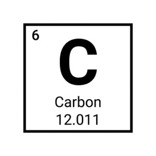
Pictured above is the element carbon, as displayed on the periodic table.
- The symbol (C) tells you the name carbon. C and carbon can be used interchangeably.
- The atomic number (6) tells you how many protons and neutrons are in the element in addition to the number of electrons surrounding the element when it is neutrally charged.
- The molar mass (12.011) tells you two things:
The average atomic mass of a single atom of carbon, measured in atomic mass units (amu)
The average mass of a mole of carbon atoms is measured in grams. 12.011 is how many grams of carbon atoms there are in a mole.
- Horizontal rows of the periodic table are called periods.
Vertical columns are called groups.
- Groups can be numbered in Roman numerals or simply as 1-18, but some are also named.
Group IA/1-- Alkali Metals
Group IIA/2 -- Alkaline Earth Metals
Group B/3-12 -- Transition Metals
Group VIIA/17 -- Halogens
Group VIIIA/18 -- Noble Gases
- There are also two rows beneath the periodic table: the lanthanides and actinides, the rare Earth elements, or inner transition metals.
- The identity of an atom is determined by the number of protons in the nucleus, which also contains neutrons. The mass number of atoms is the sum of their neutrons and protons (valued at one each). Electrons have significantly less mass than protons and neutrons and do not contribute to the mass.
- Isotopes are atoms of an element with different numbers of neutrons but the same number of protons. For example, carbon-12 has 6 protons and six neutrons, but carbon-14 has 6 protons and eight neutrons. The molar mass listed on the periodic table is determined by the average of the mass numbers of all known isotopes of an element weighted by their percent abundance.
- The mass of various isotopes of an element can be determined by a technique called mass spectrometry. Below is a mass spectrum for selenium.
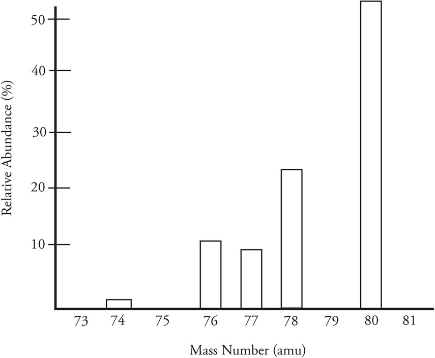
The most abundant isotope of selenium has a mass of 80, but there are four other naturally occurring isotopes. The five isotopes are combined to create a weighted average, which is then the average atomic mass of selenium.
- The molar mass of an element will give you a general idea of the most common isotope. Carbon's molar mass is 12.01, and 99 percent of all carbon in existence is carbon-12.
Moles
- The quantity ‘mole’ connects all of the different quantities in chemical equations. Coefficients in chemical equations tell you how many moles there are of that substance.
Moles and Molecules
- Avogadro’s Number is the number of atoms in a single mole of any given element. Similar to how a dozen is always 12, Avogadro’s Number is always 6.022x10^23.
1 mole = 6.022x10^23 particles
Moles = particles/(6.022x10^23)
Moles and Grams
- You can convert from moles to grams and vice versa by looking at an element’s atomic mass. Atomic mass is given in atomic mass units (Amu), which also signifies grams.
Example: one carbon atom has a mass of 12.011 amu. Therefore, one mol of Carbon atoms has a mass of 12.011 grams.
Moles = grams/ molar mass (n=m/M)
Moles and Gases
- When you know the properties of a gas, you can use the ideal gas law equation to solve for moles.
PV=nRT where P = pressure in atm, V = volume (liters), n = mol, R =
0.08206 (ideal gas constant), T = temperature (kelvin).
When P = pressure in Pascal (Pa), V = volume (m3), T = temperature (kelvin), n = mol, the gas constant R = 8.314 J·K-1·mol-1
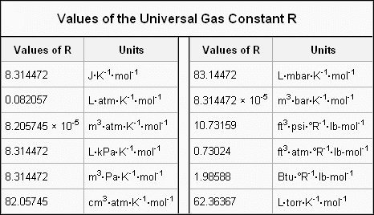
However, many gas equations take place at STP, or standard temperature and pressure, where P =1 atm, T=273 Kelvin. At STP, converting is easier because one mol ALWAYS occupies 22.4 liters.
Moles = liters/ (22.4 L·mol-1)
Molarity
- Molarity (M) expresses the concentration of a solution in terms of volume.
Molarity is used in equilibrium calculations, acids and bases, electrochemistry, and more. Its unit is mol·L-1. When an element is shown in brackets, it's being referred to in terms of Molarity：
[Na+] means "the molar concentration of sodium ions."
Percent Composition
- Percent composition is the percent by mass of each element in a compound.
To do this, you must divide the mass of each element or component in the compound by the total mass of the compound.
Example: calculate the percent composition of each element in calcium nitrate Ca(NO3)2.
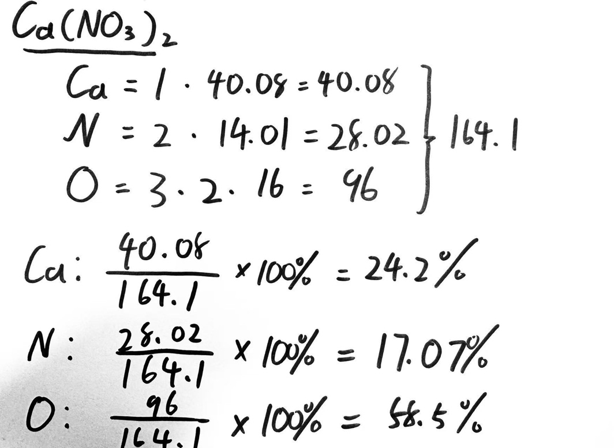
You can add up the percentages to check your work.
Empirical and Molecular Formulas
- When given masses or percent masses, you need to be able to convert them to empirical and/or molecular formulas. The empirical formula is the simplest ratio of one element in a compound to another (CH2O). The molecular formula represents the actual formula for the substrate (C6H12O6).
Example: A compound is found to contain 56.5% carbon, 7.11% hydrogen, and 36.4% phosphorus.
Part A: determine the empirical formula for the compound.

Part B: if the molar mass is 170.14g/mol, what’s the molecular formula?
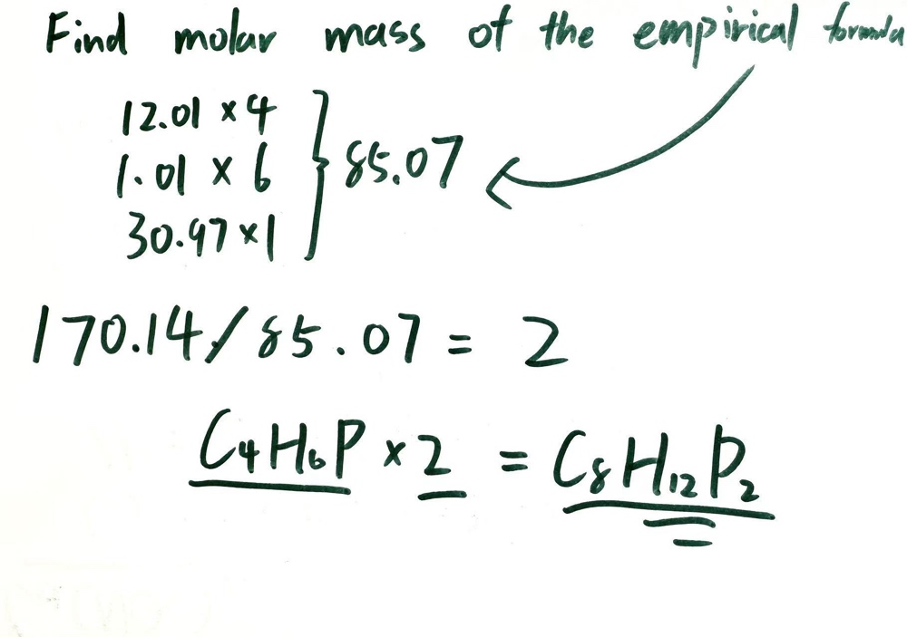
Electron Configurations and the Periodic Table
- The positively charged nucleus is constantly attracting the negatively charged electrons.
- The energy of electrons is quantized, which means electrons can only exist at certain energy levels, separated by specific intervals.
Coulomb’s Law
- The electrostatic force is the attraction between opposite charges, and the strength can vary depending on how the charges are from each other. To find the strength, you can use Coulomb's law.
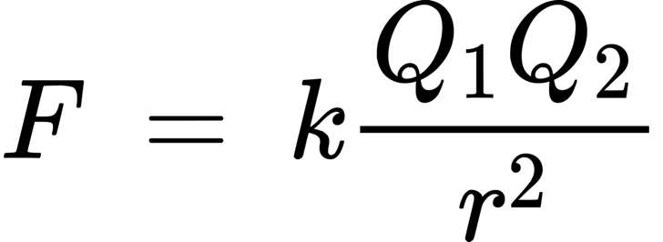
The image shows the formula for Coulomb's law, where F= electrostatic force between nucleus and electron, Q1 = magnitude of the positive charge, Q2 = magnitude of the negative charge, and r= distance between charges.
Essentially, Coulomb's law states the closer an electron is to the nucleus, the stronger the attraction and the less potential energy there is. In order to remove an electron from an atom, you must add enough energy to overcome the electrostatic force (the binding energy, which is always a positive value).
Evolution of Atomic Models
- The atomic model has evolved from the early notion of indivisible atoms to the complex quantum mechanical model of today.
- Starting with Dalton’s solid spheres, it progressed to Thomson’s plum pudding. Next, Rutherford introduced the nuclear model, and Bohr envisioned planetary orbits.
- Each step has revealed more about the mysterious and tiny building blocks of matter. Learn more about the evolution of the atomic model below.
Billiard Ball Model (John Dalton)
- The Billiard Ball Model is one of the earliest atomic theories. John Dalton first proposed the Billiard Ball Model around 1803. He imagined atoms as tiny, solid balls – like miniature billiard balls.
- In this model, atoms are indivisible and indestructible. This means they can’t be split into smaller parts, and they don’t break. Dalton suggested that every element has its unique type of atom.
- He also suggested that compounds form when atoms of different elements join together. This model was a big step in understanding matter, even though it’s much simpler than what we know about atoms today.
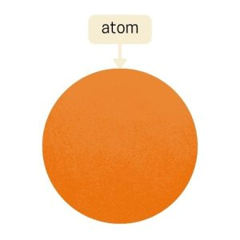
Plum Pudding Model (Joseph John Thompson)
- The evolution of the atomic model turned to the Plum Pudding Model. Joseph John Thomson proposed this model in 1904 and pictured atoms that are a bit like a classic British dessert.
- In this model, the atom is imagined as a “pudding” of positive charge with negative electrons scattered throughout, like plums in a pudding. This was a big change from earlier ideas because he suggested that atoms weren’t just solid, indivisible spheres.

- It’s called the Plum Pudding Model because it resembles a plum pudding, where the positive charge is the pudding, and the electrons are the plums. This model helped our understanding of the atom, even though it was later replaced by more accurate models.
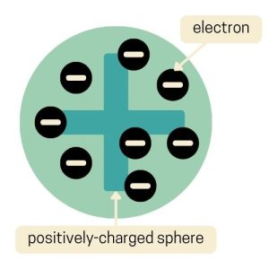
Nuclear Model (Ernest Rutherford)
- Ernest Rutherford proposed the Nuclear Model in 1911, and it dramatically changed our understanding of the atom. Picture a tiny, dense center (called the nucleus) where most of the atom’s mass and all of its positive charge is concentrated.
- Around this nucleus, much like planets orbiting the sun, move the electrons, which are tiny and negatively charged. This model was a leap from the Plum Pudding Model because it showed that an atom is a mostly empty space with a small, dense center.

- Rutherford discovered this by shooting positively charged particles at a thin gold foil. He noticed that most went straight through. But some particles deflected at large angles. So, this suggested the presence of a small, dense nucleus.
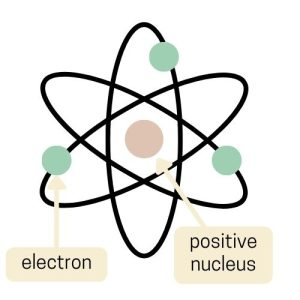
Planetary Model (Niels Bohr)
- In 1913, Niels Bohr introduced the Planetary Model, which was a way to visualize atoms that resemble our solar system. In this model, the atom has a small, dense nucleus at the center, just like Rutherford’s model.
- But it has an added twist. Electrons orbit the nucleus in specific paths or “orbits,“ similar to how planets circle the sun. Bohr’s big contribution was the idea that electrons can only orbit at certain distances from the nucleus. This is kind of like lanes on a racetrack.
- When electrons jump between these orbits, they absorb or release energy. This model helped explain why atoms emit or absorb light at specific wavelengths and helped us understand atomic structure and behavior.
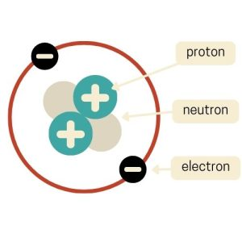
Electron Cloud Model (Erwin Schrödinger)
- Finally, Erwin Schrödinger developed the Electron Cloud Model in the 1920s. Instead of picturing electrons as little balls orbiting the nucleus like planets, the Electron Cloud Model suggests that electrons are spread out in a “cloud” around the nucleus.
- This cloud isn’t a solid thing; it’s more like a map of where you’re likely to find the electrons. The cloud is denser in places where there’s a higher chance of finding an electron.
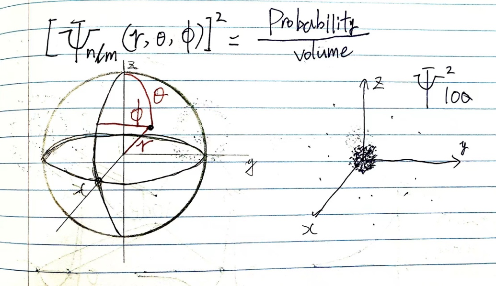
- This model comes from the world of quantum mechanics. It shows that we can’t pinpoint an exact path for an electron, but only the probability of where it might be. This was a big leap in understanding atoms, showing that at tiny scales, the universe doesn’t always follow the rules we see in our everyday world.
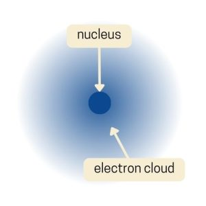
Photoelectron Spectroscopy
- To eject an electron from an atom, the ionization energy must be reached in order to overcome the binding energies of other electrons in the atom. When examining the spectrum of a single atom or a small number of atoms, it will be measured in electron volts (EV), where 1EV= 1.6x10^-19 joules. If measuring moles of atoms, use kJ/mol or MJ/mol.
- When the incoming radiation energy overcomes the binding energy and ejects the electron, and there's still radiation left over, the radiation will be converted into kinetic energy for the ejected electron.
Incoming radiation energy = binding energy + kinetic energy.
- More kinetic energy means faster an ejected electron is moving. The farther an electron is from the nucleus, the less energy it takes to eject. How far an electron is from the nucleus can be determined by looking at the speed of the electron.
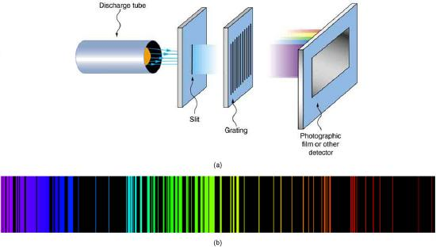
Spectra
- A photoelectron spectrum (PES) is a graph of the ionization energies for all electrons when ejected from the nucleus.
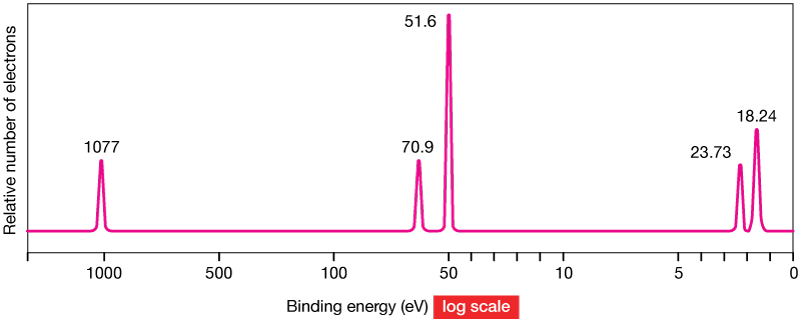
• The y-axis, the relative number of electrons, is the number of electrons ejected from a specific energy level. The x-axis shows the binding energy of those electrons, which decreases left to right.
• Each section of the peaks represents a different energy level, and each gap signifies a change in energy level. Because there are multiple peaks in each section, this shows subshells that have different distances. A subshell is the shape of the space an electron can be found in.
• The first subshell is the s-subshell, which can hold 2 electrons. Second is the p-subshell that can hold six electrons, as shown in the graph, by being three times as tall. The height can help determine the number of electrons in a shell.
• In the area for the 3rd energy level, the p-subshell isn't as tall as the other, indicating a partially filled energy level.
Electron Configuration
- The periodic table is divided into four subshells, with the size of the atom determining how many subshells it has. Subshells are known as s, p, d (10 max electrons), and f (14 electrons).
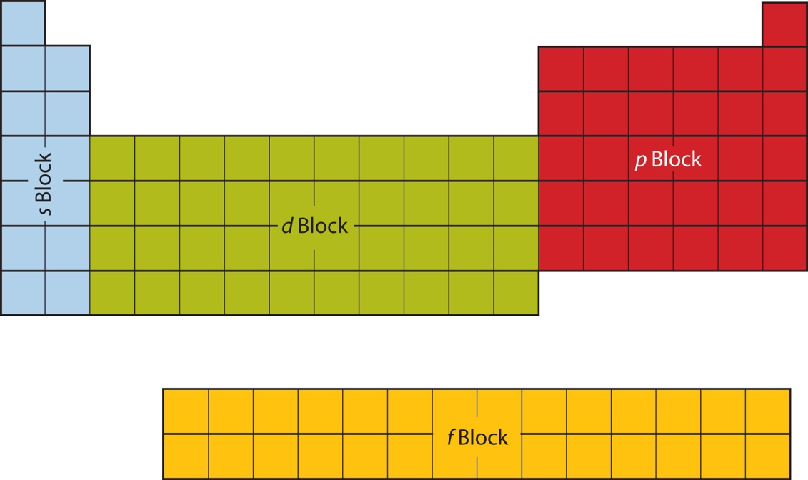
- Each subshell is as long as there are electrons in it (s block can have 2 electrons and is two elements long). This method of organization is called electron configuration and can also be used to describe.
Configuration Rules
The Aufbau Principle
- Aufbau’s principle says electrons must fill up orbitals, subshells, and shells in order to increase energy.
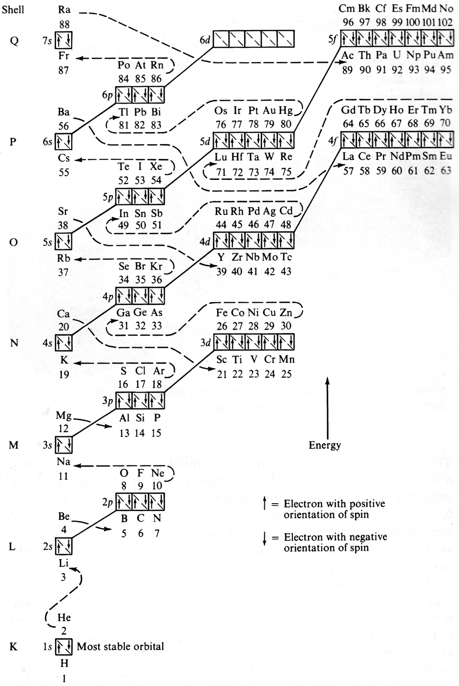
好图 Figure 5-11 from page 128 of Linus Pauling's General Chemistry, W.H. Freeman, San Francisco 1970 (Dover Edition 1988)
Example: writing a certain element’s electron configuration (Na)
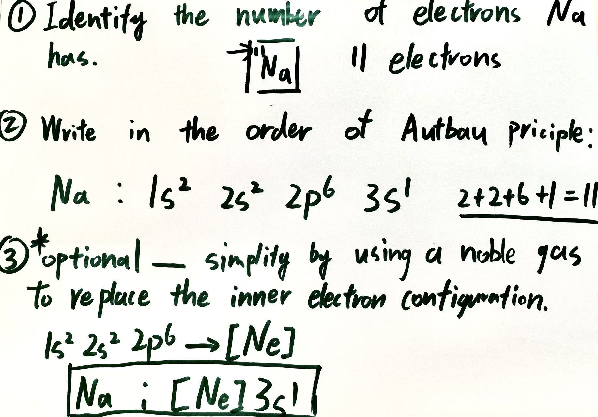
- Different orbitals have different capacity of electrons and also different shapes:
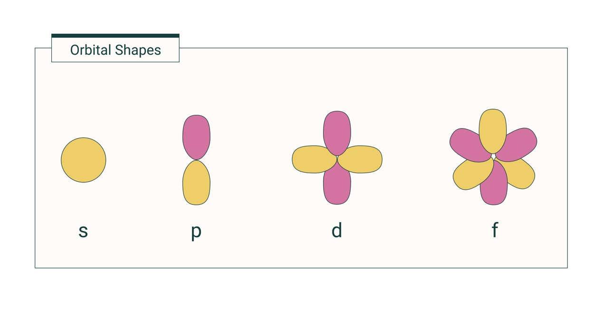
- S orbital has a maximum capacity of 2 electrons and shapes like a ball; P orbital has a maximum capacity of 6 electrons and shapes like a dumbbell; d orbital and f orbital have a maximum capacity of 10 and 14 electrons, respectively, and their shape varies.
The Pauli Exclusion Principle
- The Pauli exclusion principle states that when two electrons fill up an orbital, they must spin in opposite directions: clockwise and counterclockwise.
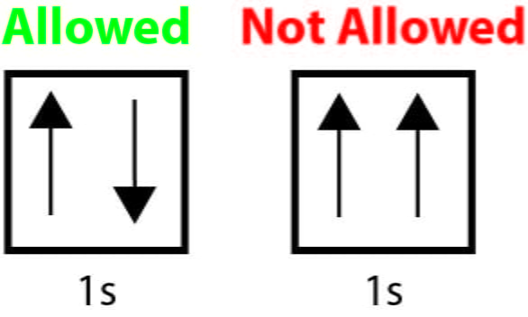
Hund’s Rule
- According to Hund's Rule, when electrons are filling the orbitals of the subshell, they will only have two in one orbital when it is not possible to have each electron in its own orbital.
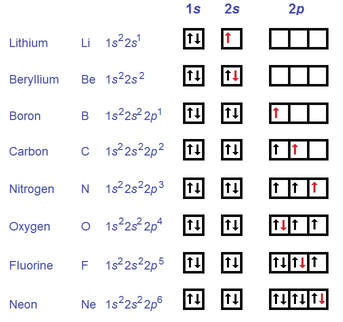
- Notice in the above picture how the arrows are pointing in different directions, signifying different spin, and the arrows will only pair up when there are no other free orbitals (nitrogen and oxygen).
Predicting Ionic Charges
- The most stable configuration of an element involves having a completely full outer shell. For any element in the s or p block, that means gaining a total of eight electrons in the outer shell (2 in the s, 6 in the p), known as valence electrons.
- When an element gains or loses electrons to become stable, they are called ions. when an element is close to a full shell, such as the halogen, it will gain electrons and be negatively charged; these are referred to as anions.
Halogens as ions will be referred to as Cl-1 or F-1
Elements in the oxygen group need 2 electrons for stability, so as ions they have a charge -2 (O-2)
- When elements such as the Alkali Metals want to reach stable configuration, they will lose electrons because it takes fewer electrons than trying to gain. These are called cations when they are positively charged.
- Alkali metals have an ionization charge of +1, and alkaline earth metals have an ionization charge of +2, and so on.
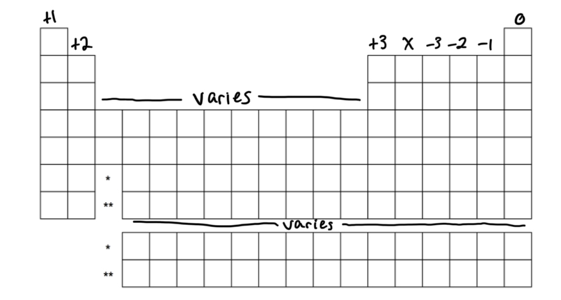
- Transition metals are cations, but can have multiple different charges which depends on which compound they are in.
For example, in CuBr2, bromine has a charge of - 1 but because there are two bromide ions, that makes their charge -2. in order to have a stable compound, the charge must be zero, which causes the copper charge to be +2. This would be called copper (ii) bromide.
CuBr would be copper (i) bromide.
- Only zinc (+2) and silver (+1) are the only transition metals with one charge possibility.
Periodic Trends
- There are three basic rules to understanding trends in the periodic table that help define element behaviors:
• Electrons are attracted to the protons in the nucleus
• The attraction can increase by having a smaller distance between the electron and proton and by having more protons in the nucleus
• Electron shielding is when electrons in the inner shells repel electrons in outer shells because they have the same charge, thus decreasing the attraction between the outer electrons and protons
• Completed shells are stable and elements will try to lose/gain electrons to complete shells, if possible.
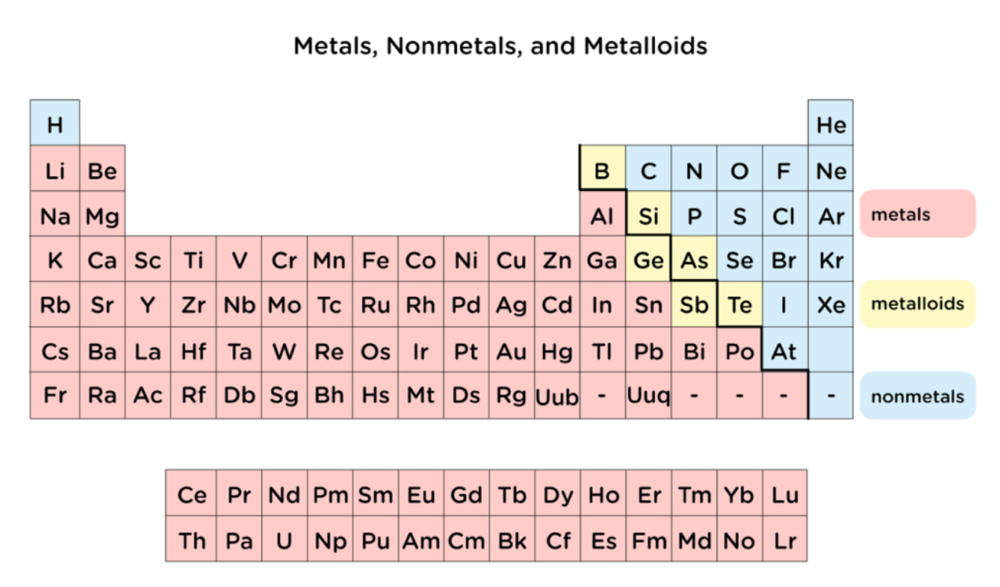
- Elements are defined into three categories: metals, metalloids, and nonmetals.
• Metals are on the left side of the periodic table; they give up electrons when forming bonds
• As the metals go more to the right, the less metallic they behave
• Lithium behaves more metallic than zinc.
• Nonmetals are on the right side and gain electrons in bonds
• Metalloids, which have a metallic and nonmetallic character, separate metals and nonmetals.
Atomic Radius
- The approximate distance between the nucleus of the atom to the valence electrons
• Moving from left to right, the atomic radius decreases. For example, Lithium has a smaller atomic radius than Fluorine. As the atomic number increases, so does the number of protons and electrons. Because there are more protons in the nucleus and the same amount of electron shells--despite there being more electrons--there is less of an electron shielding effect.
• Moving down a group, such as from Lithium to Cesium, the atomic radius increases because even though there's a stronger positive charge, there are more electron shells that increase the shielding effect and push electrons farther away.
- Cations are smaller than atoms because electrons are being taken away, electron-electron repulsions are reduced, and there is a stronger positive than negative charge.
- Anions are larger than atoms because the atom has an overall negative charge, increasing the number of electron-electron repulsions.
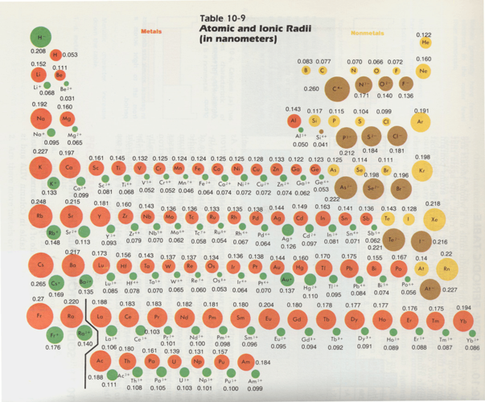
Ionization Energy
- To remove electrons from an atom, it requires energy, called the first ionization energy, and creates a cation. To remove another electron, that's the second ionization energy, and etc.
- Left to right, the ionization energy increases because electrons are closer to the nucleus (protons) and it takes more energy to pull them away from the positive charge.
- ionization energy decreases when moving down a group because there are more electron shells that cause electron shielding and repulsion, causing the electrons to be not as attracted to the nucleus and easily removed.
- The second ionization energy is greater than the first because the proton-to-electron ratio has a stronger favor for protons, this causes the electrons to have a stronger attraction than the previous, and a higher energy is needed to remove a second electron.
• Once a shell is empty, the ionization energy greatly increases because it is closer to the nucleus.
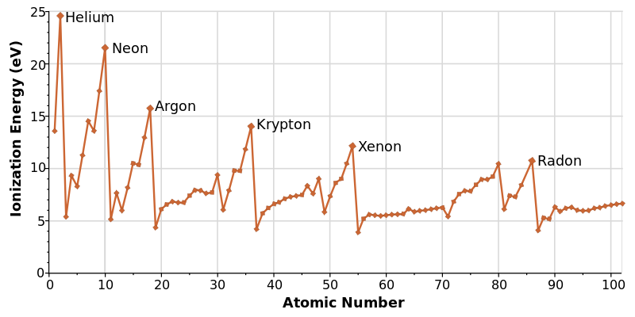
Electronegativity
- Electronegativity is how much an element's nucleus attracts electrons. Two factors contribute to electronegativity: element size (the smaller the more electronegative) and how close an element is to complete a shell.
• Left to right, electronegativity increases
• Up to down, electronegativity decreases.
- Fluorine is the most electronegative element because it is the smallest element that requires only one electron to complete the shell.
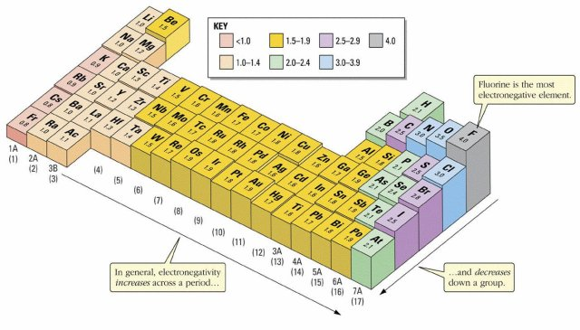
Unit 2: Molecular and Ionic Compound Structure and Properties
Bonds Overview
- Atoms engage in bonding to share electrons and achieve a stable, lower-energy state. This bonding can either be ionic which an atom gives the electron away, or it can be covalent which they share the electron.
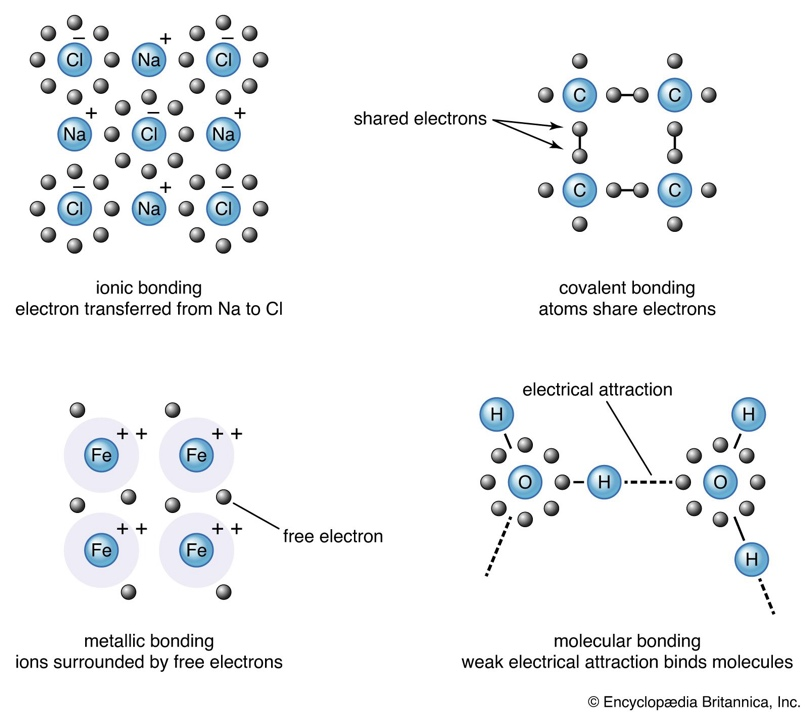
The Octet Rule
- The octet rule is a chemical rule of thumb that reflects the theory that main-group elements tend to bond in such a way that each atom has eight electrons in its valence shell, giving it the same electronic configuration as a noble gas. The rule is especially applicable to carbon, nitrogen, oxygen, and halogens, although more generally the rule applies to the s-block and p-block of the periodic table. Other rules exist for other elements, such as the duplet rule for hydrogen and helium, and the 18-electron rule for transition metals.
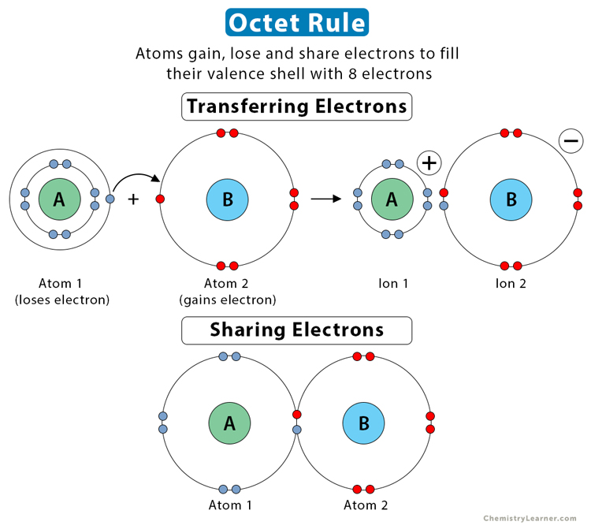
Ionic Bonds
- ionic bonds are between a nonmetal and a metal held together in a lattice structure by electrostatic attraction. To bond, the cation gives up the electron(s) entirely to the anion.
• The elements are held together by electrostatic force because the positively charged cation is attracted to the negatively charged anion.

- Any substance that is held together by ionic bonds will be strong, usually solid at room temperature, and have very high melting and boiling points.
• Melting point for ionic substances can vary depending on the charge. Per Coulomb's Law, a greater charge leads to greater bond energy (MgO with a charge of +2/-2 has a stronger bond than NaCl with a charge of +1/-1).
• if the charges are the same, then the size is considered. The smaller the ions, the greater the bond energy.
- ionic solids in the lattice structure are poor conductors because the electron is stuck around the anion. Liquids are good conductors because the electrons are free to move despite being locked around one atom. Salts are held together by ionic bonds.
- Usually, when the ΔEN of the two bonding elements is greater than 2.0, the bond is ionic.
Metallic Bonds
- Rather than the electron being stuck around one atom, like in ionic bonds, metallic bonds have a "sea of electrons". The valence electrons freely move about the bond, making them good conductors, and malleable and ductile.
- Metals can be made into alloys.
• interstitial alloys occur when there are two metals with vastly different radii combined. Steel has large iron atoms and small carbon atoms.
• substitutional alloys occur when metals of similar radii combine. Brass has copper and zinc, both similar in size.
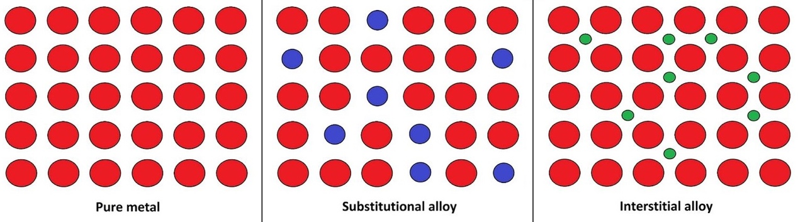
- Metallic Bonds form when metal elements bond together.
Molecular Covalent Bonding
- In covalent bonds, two nonmetals share electrons in the valence shell of the two atoms.
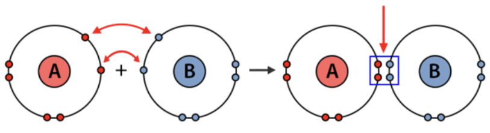
- When two or more atoms bond covalently, they create a molecule, which can be as small as two atoms or even as large as 24, there's no size limit.
- The first covalent bond between two atoms is called a sigma bond. all single bonds are also Sigma bonds. The second bond, a double bond, is called a pi bond. The second and third bond in a triple bond is a pi bond. Double and triple bonds are shorter and stronger than single bonds, but not double or triple the strength.

- If the ΔEN is less than 0.5, then the bond is nonpolar covalent; If the ΔEN is between 0.5 and 1.6, the bond is considered polar covalent.
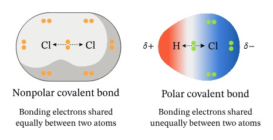
- When the molecule consists of polar covalent bonds and its geometric structure is not symmetrical, the molecule would be a polar molecule, otherwise, the molecule is nonpolar.
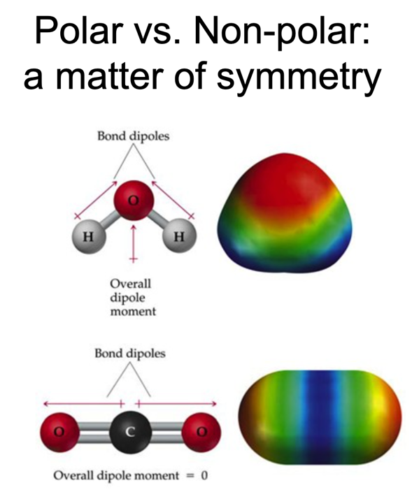
Examples of Polar Molecules:

Examples of Nonpolar Molecules:
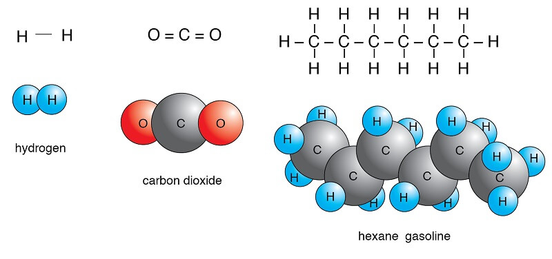
Internuclear Distance
- The length of a covalent bond depends on balancing the attractive and repulsive forces. When two atoms are too close, the potential energy is high, and the nuclei reset each other. When they are too far, the potential energy is zero because they cannot attract.
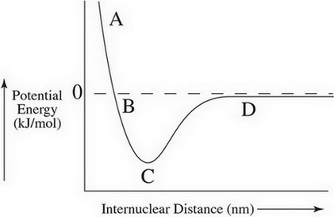
- The dashed line represents zero potential energy, but it can be negative, which represents lower energy. At label A, atoms are too close to bond. At label D, they are too far. At label C the repulsive and attractive forces are equal, and they can bond.
Network Covalent Bonds
- Network covalent bonds as solids are held together in a lattice of covalent bonds, which makes them very hard, with very high melting points and boiling points. Electrons cannot move about the lattice, making them poor conductors.
- The most common network solids are carbon (graphite or diamond) and silicon (quartz) because of the four valence electrons that allow more covalent bonding.
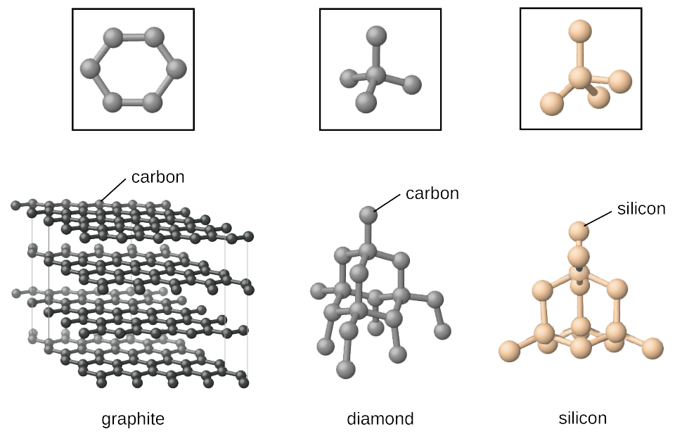
Conductivity
- The type of bonding can be determined by looking at if it's a good conductor of electricity. this chart shows conductivity based on phase.
|
solid |
Liquid |
AQUEOUS |
gas |
IONIC |
No |
Yes |
Yes |
No |
MOLECULAR COVALENT |
No |
No |
No |
No |
NETWORK COVALENT |
No |
No |
N/A |
No |
METALLIC |
Yes |
Yes |
N/A |
No |
- Covalent substances never conduct electricity, including pure water. Tap water is not pure water and is filled al dissolved ions that can conduct.
- ionic substances cannot conduct as solids because of the electrons stuck in the lattice structure. As liquids and when aqueous, the electrons can move around and conduct. The ability to conduct depends on concentration and how many ions they dissociate into.
• 1 M of NaCl conducts better than 0.1 M of NaCl because there are more ions present per unit of solution.
• however, 1 M of CaCl2 would conduct better than NaCl because it dissociates into three ions rather than two ions.
Lewis Dot Structures
Drawing Lewis Dot Structures
- Steps to draw Lewis Dot Structure:
Example: drawing CH2O (Formaldehyde) Lewis Dot Structure
There are 4 main steps:
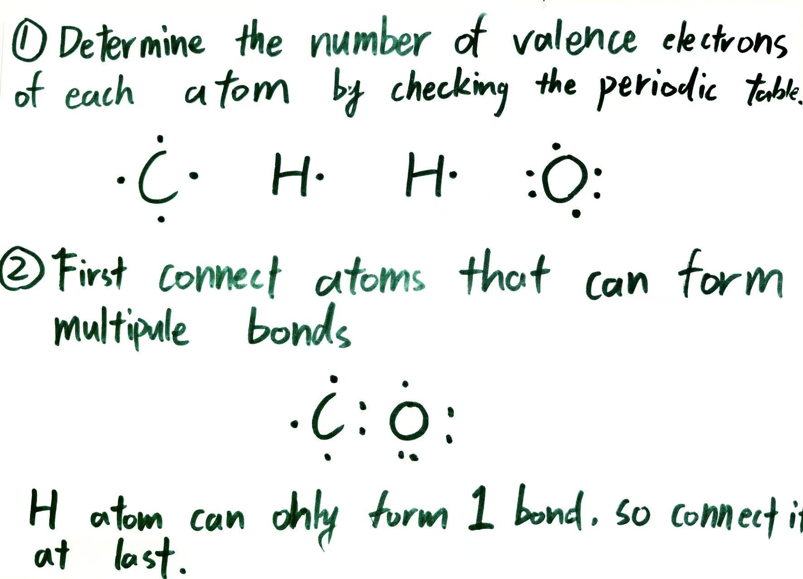
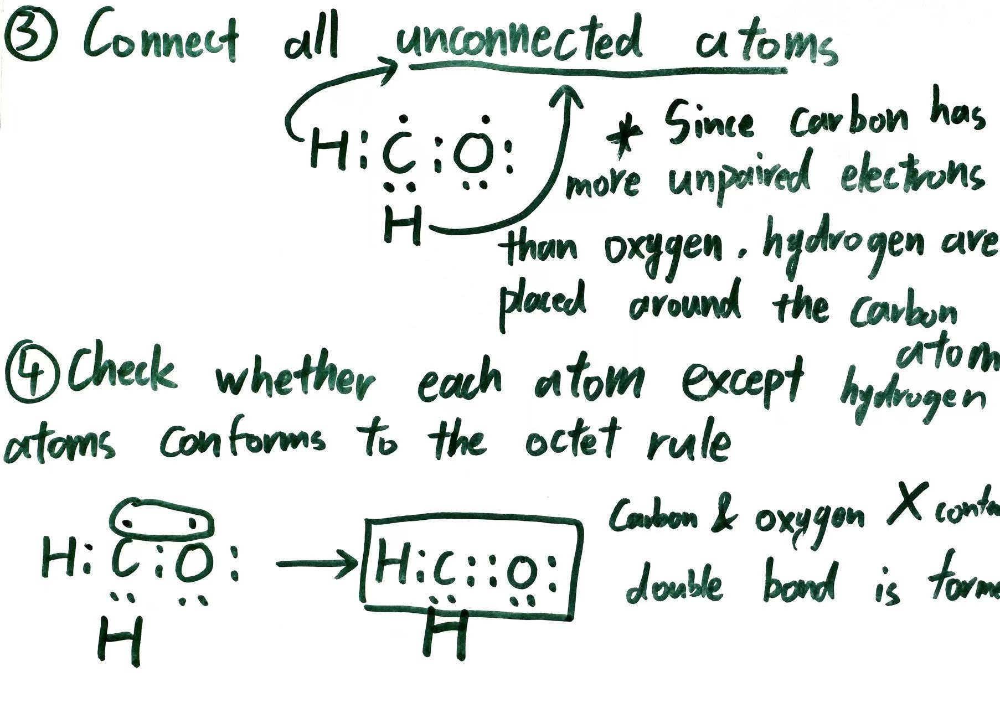
Resonance Forms
- A resonance form is another way of drawing a Lewis dot structure for a given compound. Equivalent Lewis structures are called resonance forms. They are used when there is more than one way to place double bonds and lone pairs on atoms.
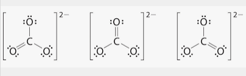
- The Lewis dot structure of CO3 can be drawn with 2 single bonds and one double bond on any oxygen. Despite there being a double bond, each bond has a similar strength and length, in between a double and single bond.
- To calculate the relative strength and length, you can use bond order calculations.
• a single bond has a bond order of one and a double bond has a bond order of two. Add up the amount of single and double bonds and divide by how many resonance forms there are.
•(1+2+1)/3=1.33
Incomplete Octets
- Some atoms do not need eight valence electrons. Hydrogen and helium only need two, but helium never bonds. Boron is stable with six electrons. All others need eight electrons in covalent bonds.
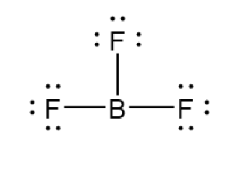
Expanded Octets
- Molecules with d subshells can have more than eight valence electrons, but never more than twelve. Silicon, phosphorus, sulfur, and chlorine can expand, but never carbon, oxygen, or nitrogen. Noble gases can sometimes bond because of their empty d-orbital.

Formal Charge
- Even though a molecule has several variations of Lewis dot structures, there is a more likely structure, called formal charge. To find a formal charge, subtract the total number of valence electrons from the number of assigned electrons (bonded and lone pairs).
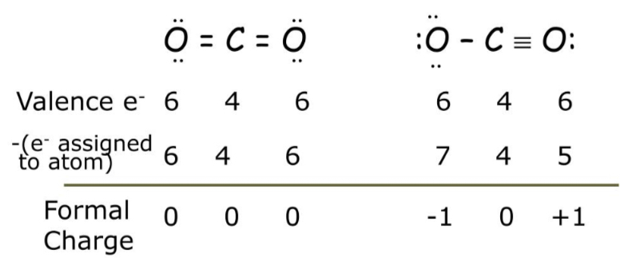
- To determine which structure is more likely, choose the one with the formal charge of zero (the left structure on the diagram).
Hybridization and Molecular Geometry
- In chemistry, hybridization is defined as the process of combining two atomic orbitals to create a new type of hybridized orbitals. The formation of hybrid orbitals with completely different energies, shapes, and so on is frequently the outcome of this intermixing. Hybridization is mostly carried out by atomic orbitals of the same energy level. Fully filled and half-filled orbitals, however, can both participate in this process if their energies are equivalent.
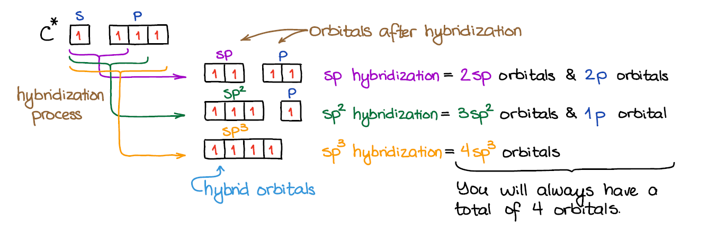
The types of hybridization are as follows:
1) (sp) Hybridization
- In sp hybridization, one s- and one p-orbital are combined together to generate two sp–hybrid orbitals with a linear structure and a bond angle of 180 degrees.
- Each sp hybridized orbital has the same proportion of s and p characters – 50 percent s character and 50 percent p character.
- For example, when BeCl2 is formed, the first atom is in the excited state 2s12p1, which is then hybridized to generate two sp–hybrid orbitals. BeCl2 is formed when these hybrid orbitals collide with the two p-orbitals of two chlorine atoms.
2) (sp2) Hybridization
- One s- and one p-orbital are combined together to generate three sp2– hybrid orbitals with a triangular planar shape and a bond angle of 120 degrees. These three hybrid orbitals remain in the same plane and form a 120° angle with one another. The hybrid orbitals have a 33.3 percent ‘s’ character and a 66.66 percent ‘p’ character in each of them.
- A triangle planar form is found in all the molecules through which the central atom is connected to three other atoms and is sp2 hybridized.
3) (sp3) Hybridization
- One s- and three p-orbitals are merged in this hybridization to generate four sp3– hybrid orbitals with a tetrahedral structure. These are aimed at the four corners of a conventional tetrahedron and form a 109°28′ angle with each other.
- The sp3 hybrid orbitals have a 109.280-degree angle between them.
- Each sp3 hybrid orbital contains 25% s character and 75% p character.
- Ethane and methane are two examples of sp3 hybridization.
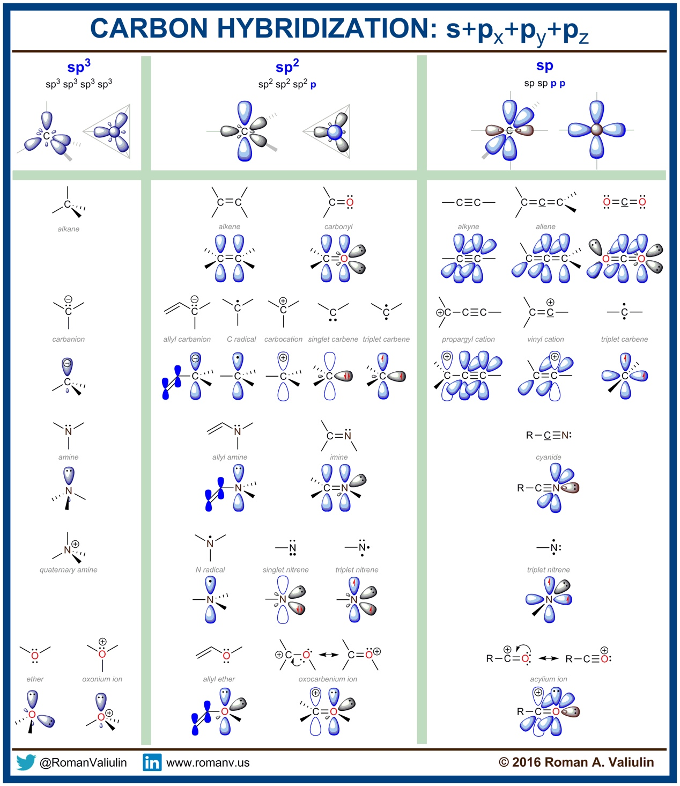
4) (sp3d)Hybridization
- The intermixing of 1s, 3p, and 1d orbitals to generate 5 sp3d hybridized orbitals of equal energy is known as sp3d hybridization. Their geometry is trigonal bipyramidal.
- The trigonal bipyramidal symmetry is formed by combining the s, p, and d orbitals.
- The equatorial orbitals are three hybrid orbitals in the horizontal plane that are inclined at a 120° angle to each other.
- The remaining two orbitals, known as axial orbitals, are located in the vertical plane at 90 degrees to the equatorial orbitals.
- Hybridization in Phosphorus Pentachloride as an example (PCl5).
5) sp3d2 Hybridization
- The 1s, 3p, and 2d orbitals of sp3d hybridization are intermixed to generate six identical sp3d2 hybrid orbitals.
- These six orbitals are aimed at the octahedron’s corners.
- They are angled at a 90-degree angle to one another.
- Types of geometries
• If the central atom has two electron pairs, then it's an sp hybridization with a linear shape.
• If the central atom has three electron pairs, it has the sp2 hybridization and a basic shape of trigonal planar
• The central atom has four electron pairs, it has an sp3 hybridization and a basic tetrahedral shape.
• The central atom has five electron pairs; it has a trigonal bipyramidal shape.
• The central atom has six electron pairs, its octahedral.
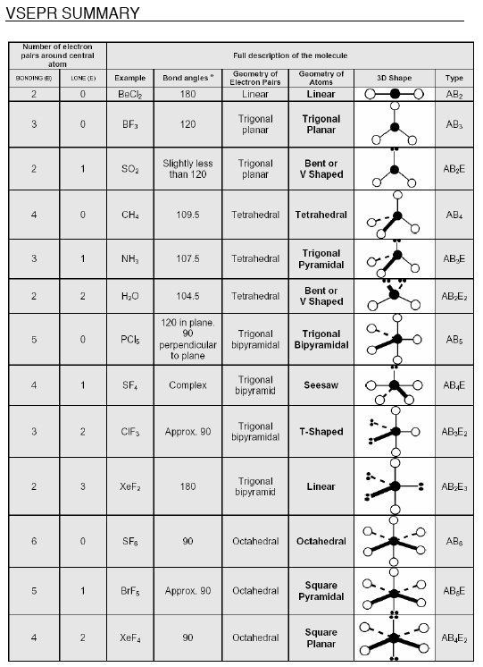
Unit 3: Intermolecular Forces and Properties
Polarity
- When a covalent bond is formed and electrons are shared, they are shared unequally. The more electronegative elements in the bond, the stronger the pull-on electrons. The unequal share of electrons is called a polar covalent bond which also causes a slight partial charge on each atom.
- When there's a slight charge, dipoles are created. Dipoles are opposite charges separated by some distance. Partial charges are indicated using the lowercase Greek letter delta.
- When there's a covalent bond of equal or similar electronegativity, there is no dipole, and it is a nonpolar covalent bond.
Molecular Polarity
- Based on the type of molecular geometry and the dipoles of bonds, molecules can have polarity.
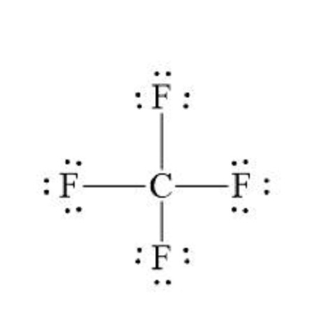
- In carbon tetrafluoride, the individual carbon-fluorine bonds are polar but because there are four C-F bonds and they are geometrically organized in a way that they cancel out, the molecule is nonpolar.
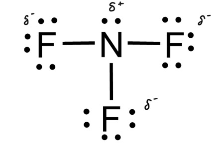
- In NF3, only three of the four bonding locations have fluorine, with the last being unfilled by a lone pair that belongs to nitrogen. Fluorine is more electronegative than nitrogen, so it gets a negative charge.
- Typically, if the central atom has a lone pair and is different than the bonded atoms, it is asymmetrical and therefore polar. If the central atom has no lone pairs and all of the bonded atoms are the same, it is symmetrical and nonpolar.
• lone pairs on the central atom make a molecule polar, but there are a few exceptions: trigonal planar with three lone pairs or octahedral with two lone pairs.
- Because in Lewis dot structures the least electronegative atom is in the center, polar molecules usually have a central positive charge. However, when hydrogen is a terminal atom, its low electronegativity makes the central atom negative.
Intermolecular Forces
- Intermolecular forces (IMFs) are the forces in between covalent bonds. in order for a phase change to occur, these forces must be broken.
• when ionic substances change phases, the bonds between individual ions are actually broken.
• when covalent substances change phase, the bonds between individual atoms remain but the bonds holding molecule to molecule together break apart.
Dipole-Dipole Forces
- Dipole-dipole forces occur when the positive center of one polar molecule is attracted to the negative end of another polar molecule.
- Molecules with greater polarity, and therefore greater dipole-dipole forces, have high melting and boiling points. However, dipole-dipole forces are weak, and most substances held together by these forces are gases or liquids at room temperature.
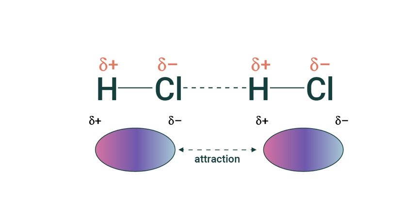
Hydrogen Bonds
- Hydrogen bonds are a type of dipole-dipole force where the hydrogen (positive) end of a molecule is attracted to ONLY oxygen, nitrogen, or fluorine (negative end).
- Hydrogen bonds are stronger than basic dipole-dipole forces because when hydrogen gives up it's electron, the nucleus in exposed. Water and ammonia have higher melting and boiling points than other molecules held together by non-hydrogen bonds.

Hydrogen bonding between guanine and cytosine, one of two types of base pairs in DNA
London Dispersion Forces
- London Dispersion forces (LDFs) occur between all molecules and are very weak attractions caused by random electron movements.
- Because LDFs depend on random electron movement, a molecule with more electrons has stronger LDFs. Weak LDFs result in low boiling and melting points, even lower and weaker than dipole-dipole forces. They are typically gases and liquids at room temperature.
• even though LDFs are weak, it's hard to compare molecules with lots of electrons to polar substances with few electrons. LDFs may be equal to hydrogen bonds if there are enough electrons.
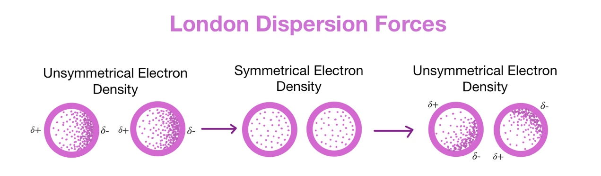
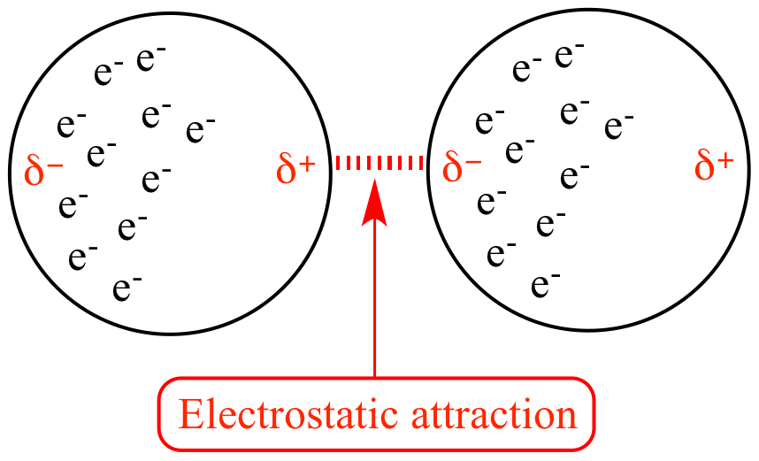
Total Ranking of Intermolecular Forces and Intramolecular Forces:

Bonding and Phases
- The stronger the IMF of a substance, the tighter the atoms are packed together. Solids have very tight-knit molecules and have the strongest IMFs. Gases have the weakest IMFs and have the most spread apart atoms.
• substances with weak IMFs are gases at room temperature, such as nitrogen gas. Substances with hydrogen bonds are liquid at room temperature, such as water.
- Ionic substances do not experience IMFs and have their phase determined by the ions in the bond. Ionic substances are usually solids at room temperature.
Vapor Pressure
- Vapor pressure or equilibrium vapor pressure is the pressure exerted by a vapor in thermodynamic equilibrium with its condensed phases (solid or liquid) at a given temperature in a closed system.
- IMFs can predict vapor pressure. The more movement in a liquid, the more likely it is to become a gas. The more kinetic energy, the higher the likelihood of overcoming IMFs and changing phases.
- Boiling is different than vaporization because boiling adds heat (energy) to cause the IMFs to break. Vaporization requires no excess heat to be added. However, the higher the temperature of the liquid, the more likely the molecules are to break free of the IMFs.
• stronger IMFs = lower vaporization.
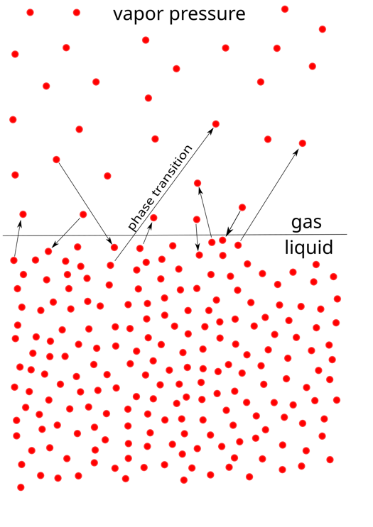
Solution Separation
- Using the different IMFs and Coulombic attractions of molecules, substances can be separated.
Solutes and Solvents
- Like dissolves like. (相似相溶)
polar substances will dissolve in polar solvents (salt in water). Nonpolar substances will dissolve in non polar solvents (oil). The dissociation, or breaking up, of ions can conduct electricity because they become electrolytes.
Paper Chromatography
- Through chromatography, a mixture can be separated by passing it through a medium and each substance in the mixture reacts differently. A common form of chromatography is paper chromatography. in paper chromatography, paper is suspended with one end submerged in the solvent that slows climbs up the paper and pulls apart the solvent as it goes up.
- Each substance has a different polarity and therefore a different attraction to the solvent. When black ink is separated via paper chromatography, the different colors in the ink are pulled apart. By determining which part moved the most with the solvent, you it can be determined which pert was the most polar or non-polar (depending on whether or not the solvent is polar).
- The distance of the ink traveled is measured by the retention factor (Rf) where Rf = (distance traveled by solute) /(distance traveled by solvent front).

Column Chromatography（“过柱子”）
- Two liquids pass through stationary substances and the distance travelled is determined by polarity.
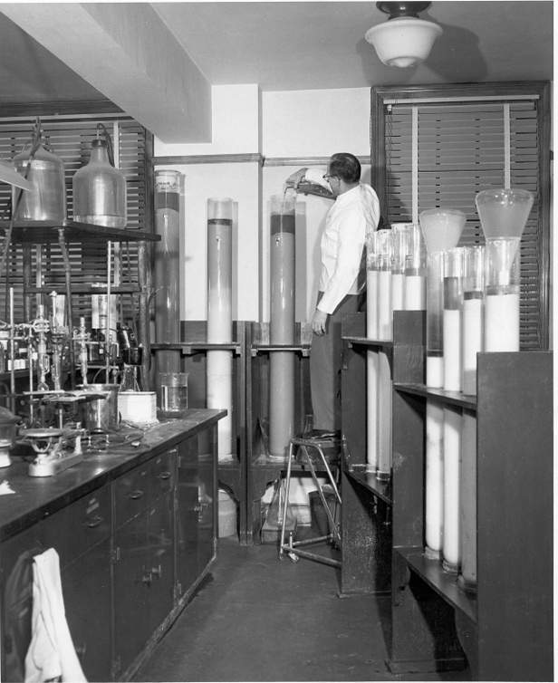
A chemist in the 1950s using column chromatography. The Erlenmeyer receptacles are on the floor.
Distillation
- Two liquids with different boiling points are heated to the lowest temperature boiling point. The gaseous substance is collected and cooled to a liquid, which causes the two mixtures to be collected separately.
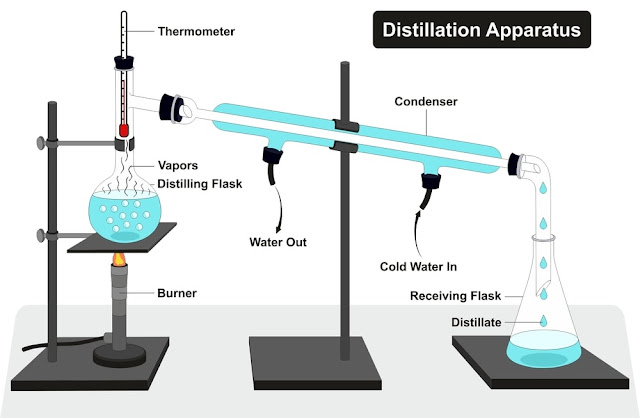
Kinetic Molecular Theory
- Ideal gases have certain rules:
• The kinetic energy (KE) is directly proportional to the temperature. Higher temperature = higher KE.
Kinetic energy of a single gas molecule = 0.5 (mv)^2
m = mass of molecule in kg. v= speed of molecule in m/s. Ke measured in joules (j).
• If different gases are present at the same temperature, they will have the same KE
• The volume of a single ideal gas is negligible when compared to the volume the entire is contained in.
• There are no forces of attraction between a gas molecule and an ideal gas.
• Gas molecules are in constant motion, collide with the walls of the container and other gas molecules, and don't lose any energy.
Maxwell-Boltzmann Diagrams
- A Maxwell-Boltzmann diagram shows the range of velocities for molecules of a gas. Even though KE is the same for gases at the same temperature, this cannot be said for velocity because gas molecules have different masses.
- The first type of diagram involves plotting the velocity of molecules for one gas at different temperatures. The higher the temperature, the higher the variation of velocity in particles.
- It can also show different gas velocities at the same temperature. Because oxygen gas weighs the most, it has the lowest velocity but is equal to KE to hydrogen gas, which was the least and has the highest velocity.
- The kinetic molecular theory is used to determine the motion of a molecule of an ideal gas under a certain set of conditions. However, when looking at a mole of ideal gas, it is impossible to measure the velocity of each molecule at every instant of time. Therefore, the Maxwell-Boltzmann distribution is used to determine how many molecules are moving between velocities v and v+dv. Assuming that the one-dimensional distributions are independent of one another, that the velocity in the y and z directions does not affect the x velocity, for example, the Maxwell-Boltzmann distribution is given by:
Where：
m is the particle mass
k_{B} is the Boltzmann constant
T is thermodynamic temperature
f(v_{x}) is a probability distribution function
- Additionally, the function can be written in terms of the scalar quantity speed c instead of the vector quantity velocity. This form of the function defines the distribution of the gas molecules moving at different speeds, between c1 and c2, thus:
- Finally, the Maxwell-Boltzmann distribution can be used to determine the distribution of the kinetic energy for a set of molecules. The distribution of the kinetic energy is identical to the distribution of the speeds for a certain gas at any temperature.
Related Speed Expressions
- There are three speed expressions that can be derived from the Maxwell-Boltzmann distribution: the most probable speed, the average speed, and the root-mean-square speed. The most probable speed is the maximum value on the distribution plot. This is established by finding the velocity when the following derivative is zero:
Which is:
The average speed is the sum of the speeds of all the molecules divided by the number of molecules.
The root-mean-square speed is square root of the average speed-squared.
It always follows that for gases that follow the Maxwell-Boltzmann distribution (if thermalized)
FOR MORE INFORMATION:
THERMODYNAMICS STUDY GUIDE: https://book.yunzhan365.com/rkepx/hhys/mobile/index.html
DERIVATION OF THE MAXWELL-BOLTZMANN DISTRIBUTION: https://book.yunzhan365.com/rkepx/ksaj/mobile/index.html
Effusion
- Effusion is the rate a gas will escape from a container with microscopic holes from high pressure to low pressure. A balloon has tiny holes which is why gas escapes slowly over time.
- The effusion rate depends on the speed of the molecule, temperature, and molar mass. The faster a gas is moving, the more collisions there are with the sides of the container, which makes it more likely to hit a hole and escape. If the temperature is high, the rate of effusion is higher. A gas particle with a low molar mass will effuse before another gas with a higher molar mass.
Uranium enrichment by gaseous diffusion. The lighter 235UF6 effuses through a porous barrier at a slightly faster rate than 238UF6. The pressure difference across the membrane drives the effusion. The enrichment shown here for a single step is exaggerated for illustrative purposes.
Graham’s Law
- Scottish chemist Thomas Graham (1805–1869) found experimentally that the rate of effusion of a gas is inversely proportional to the square root of the mass of its particles. In other words, the ratio of the rates of effusion of two gases at the same temperature and pressure is given by the inverse ratio of the square roots of the masses of the gas particles.
The Ideal Gas Equation
- The ideal gas equation is PV=nRT, where P is pressure in Pa, V, is the volume of the gas (m3), n is the number of moles a gas, R is the ideal gas constant (8.314J·mol-1·K-1), and T is the temperature in kelvin.
• Kelvin can be determined by adding 273.15 to a temperature in Celsius.
- The combined gas law is used when moles are held constant.
• If the volume is constant: as pressure increases, temperature increases.
• If the temperature is constant: as pressure increases, volume decreases, according to Boyle's Law.
• If the pressure is held constant: as temperature increases, volume increases, according to Charles’s Law.
UNITS OF THE IDEAL GAS COSTANT:
Value of R |
Unit |
8.31446261815324 |
|
8.31446261815324 |
|
8.31446261815324 |
|
Other common units |
|
8314.46261815324 |
|
8.31446261815324 |
|
0.0831446261815324 |
|
8.31446261815324×107 |
|
0.730240507295273 |
|
10.731577089016 |
|
1.985875279009 |
|
297.031214 |
|
554.984319180 |
|
0.082057366080960 |
|
62.363598221529 |
|
1.98720425864083... |
|
8.20573660809596...×10−5 |
|
Dalton’s Law
- Dalton's law states that the sum of all of the partial pressures of individual gases in a container is equal to the total pressure of gases in the container.
- To find the partial pressure of a gas in a container, divide the moles of that gas by the total moles of gas in the container and then multiply by the total pressure in the container. This is also called mole fraction.
Deviations From Ideal Behavior
- The kinetic molecular theory becomes invalid when the temperature is too low and/or the pressure is too high because the gases become too tightly packed.
• the volume of gases becomes significant because under high pressure the amount of volume of gas is taking up space that is significant when compared to the volume of the container.
• gas molecules start sticking together which affects pressure since fewer molecules are bouncing around.
- Gases under normal conditions can deviate slightly if they have strong IMFs.
Density
- The density of a gas can be calculated using D=m/V where D is density, m is the mass of a gas in grams, and V is volume in liters.
- To find molar mass from density, use the equation:
Electromagnetic Spectrum
- An electron changing energy levels and the amount of electromagnetic radiation absorbed is determined by E=hv where E is energy change (in joules), h is Planck's constant (6.626 x 10-34 j·s), and v is frequency (in s-1).
- wavelength can be determined from the frequency:
Beer’s Law
- To measure the change in the concentration of a solution over time, a spectrometer is used and can be calculated.
- A=abc where A is absorbance, a is molar absorptivity of the solution, b is path length (how far light is traveling in the solution), and c is concentration.
Unit 4: Chemical Reactions
Types of Reactions
- Synthesis reaction: when elements or simple compounds are combined to form a single, more complex compound. A+B → AB
- Decomposition: opposite of synthesis-occurs usually in the presence of heat. AB → A + B
- Acid-base: when an acid (H+) reacts with a base (OH-) to form water and a salt. HCl (aq) + NaOH (aq) → NaCI (aq) + H2O (l)
- Oxidation-reduction (redox): results in a change of oxidation state (only for some). Cu2+ (aq) + 2 e- → Cu (s)
- Hydrocarbon combustion: carbon + hydrogen (and sometimes oxygen) is ignited and produces CO2 and water, sometimes other compounds as well depending on the elements present. C4H10 + O2 → CO2 + H2O
- Precipitation: two aqueous solutions mix to create a solid precipitate. A (aq) + B (aq) → C (aq) + D (s)
• Some solubility rules:
Compounds with alkali metals and ammonium are always soluble.
Compounds with nitrate are always soluble.
Chemical Equations
Balancing Chemical Equations and Calculations
- Stoichiometry steps:
Covert given quantity to moles → use equation coefficients to determine limiting reactant → use balanced equation to determine how much product generated → convert moles to the desired unit.
For balancing redox reactions:
Percent Error
- % error = (|experimental value - expected value| / expected value) x 100%
Combustion Analysis
- Because of the law of conservation of mass, when a hydrocarbon is combusted, all of the carbon in the hydrocarbon will create CO2 and all of the hydrogen will end up as H2O. (记住此结论＆以此类推)
Gravimetric Analysis
- Gravimetric analysis is used to determine an unknown element in a precipitate reaction.
E.G.: A 4.33 g sample of an unknown alkali hydroxide compound is dissolved completely in water. A sufficient solution of copper (II) nitrate is added to the hydroxide solution such that it will fully precipitate copper (Il) hydroxide via the following reaction: Cu2+ (aq) + 2 OH- (aq) → Cu (OH)2 (s). After the precipitate is filtered and dried, its mass is found to be 3.81 g. Is the original alkali hydroxide sample most likely LiOH, NaOH, or KOH?
Oxidation States
- In chemical reactions, electrons are transferred between reactants and can be determined with oxidation states, which have several rules:
1. Any neutral atom not bonded has an oxidation state of zero.
2. A singular atom has an oxidation state equal to its charge.
3. In most compounds, oxygen is -2. One exception is H2O2, where oxygen is -1.
4. When bonded to a nonmetal, hydrogen is +1. When bonded to a metal, hydrogen is -1.
5. When oxygen is not present, the most electronegative element has a state equal to its most common charge.
6. The combined oxidation states must be equal to the charge of that compound.
Oxidation-Reduction Reactions
- In redox reactions, electrons are swapped between reactants, and the oxidation states of the reactants are changed.
- In Fe + 2 HCl → FeCl2 + H2, iron's state goes from 0 to +2 and H goes from +1 to 0.
• Fe was oxidized.
- It can be written as a half-reaction:
• Fe → Fe2+ + 2e- oxidation
• 2 H+ + 2e- → H2 reduction
Redox Titrations
- To determine the concentration of an unknown solution, a chemical is added until usually a color change occurs.
- If KMnO4 is added to a solution with MnO4 (which is a deep purple), the Mn is reduced and a color change occurs. If KMnO4 is added to a colorless solution that can be oxidized, it will turn pink.
Unit 5: Chemical Kinetics
Rate Law Using Initial Concentrations
- The rate law of a reaction is based on the initial concentrations of the reactants, the rate at the disappearance of products, and the appearance of products, and requires experimental data. Arrhenius constant, k, is based on the activation energy and temperature of a reaction.
How to do it:
怎么做：
1. Rate Calculation by definition:
We have:
2. “Initial Rate” VS. “Initial Concentration” :
E.g.
A+ 2B + C → D
experiment |
initial [a] (M) |
INITIAL [B] (M) |
INITIAL [C] (M) |
initial rate of formation of D (M/sec) |
1 |
0.1 |
0.1 |
0.1 |
0.01 |
2 |
0.1 |
0.1 |
0.2 |
0.01 |
3 |
0.1 |
0.2 |
0.1 |
0.02 |
4 |
0.2 |
0.2 |
0.1 |
0.08 |
We have:
Or
The value of the exponent is based on how the reactants affect the rate. A larger exponent means the reactant concentration changes more. To find the exponent value, see what happens when a concentration is doubled.
指数的值取决于反应物对速率的影响。指数越大，反应物浓度变化越大。要找到指数值，要找出浓度加倍时会发生什么。
For [A]:
Use experiment 3 and 4 values for [A] because no other reactant value changes. The rate changes from .02 to .08 by quadrupling. The value of the exponent x is found by doubling the concentration and setting it equal to the value of the rate changes (4).
(2)^x = 4, so x=2.
Now the rate is Rate = k[A]^2[B]^y[C]^z or second order with respect to A.
For [B]:
Use experiments 1 and 3. It doubles the rate from 0.01 to 0.02.
(2)^y=2, so y=1
The rate is now Rate = k[A]^2[B]^1[C]^z or first order with respect to B.
For [C]:
Use experiments 1 and 2, the rate stays the same so x=0
Rate = k[A]^2[ B]^1[C]^0 or Rate = k[A]^2[ B]^1 so the reaction is overall third order.
Any experiment can be used to find k. Use experiment 3:
k = (rate/[A]^2[B]) = (0.02/(0.1)^2(0.2)) = 10 M^-2sec^-1
k = (\frac{rate}{[A]^2[B]}) = (\frac{0.02}{(0.1)^2(0.2)}) = 10 M^{-2}sec^{-1}
3. Rate Law Using Concentration and Time＆Half-life:
Rate law can be expressed using concentration changes over time. There are zero, first, and second-order rate laws that each have the roan equation and graph.
Zero-Order Rate Laws:
In zero order, the rate is always the same at a given temperature and doesn't change based on reactant concentration.
rate = k([A]^{0})
The graph is a straight line equal to -k and concentration vs. time.
We can integrate the equation above to get the integration form of the equation and, therefore, get the half-life of the reaction.
We know how to solve differential equations:
Then we have:
The half-life of a substance is how long it takes for half of the substance to react.
Replacing t with half-life t1/2 we get:
Simplifying, we can get:
It can be noted from the equation given above that the half-life is dependent on the rate constant as well as the reactant’s initial concentration.
First-Order Rate Laws:
The first-order rate law is based on the concentration of one reactant to the first power.
Using the same method, we can get the integral form of the equation:
The graph is the natural log of [A] vs. Time. This creates a straight line with a slope of -k and y-interest of ln[A] at time 0.
To derive the equation for half-life：
From this, we have:
Which means:
The half-life is independent of the starting concentration.
Second-Order Rate Law:
The second-order rate depends on a reactant raised to the second power.
Using the same method, we can get the integral form of the equation:
The inverse concentrations vs. time create a straight line, where the slope is k and the y-intercept is (1/[A]) at time zero.
The half-life is:
From here, we can already see the rules of the order of the reaction and its integral form. Usually, there will not be more than a third-order reaction, and in the examination, you will almost always see zero, first, and second-order reactions. (you can see why in the collision theory)
Therefore, for n-th order reactions:
Integral form:
[Except first order]
Units of rate constant (k):
Half-life:
[Limit is necessary for first order]
Summary Table:
4. Mechanism Analysis:
E.g.
Step #01
Step #02
If rate=k[NO][Br2]
Then step #01 is the slow step
Else if rate=k[NO]^2[Br2]
Then step #02 is the slow step
Some reactions occur in multiple steps rather than in one step and the overall balanced reaction is the sum. The in-between steps are called elementary steps.
Example: The rate for elementary steps can be determined by setting the concentration of a substance to the power of its coefficient
I. A + A ⇌ X (fast) Rate=k[A]^2
II. X + B → C + Y (slow) Rate=k[X][B]
III. Y + B → D (fast) Rate=k[Y][B]
X and Y are intermediates, they are created in one step and consumed in another, so they cancel out.
If an elementary step has only one reactant, it is unimolecular. If it has two reactants (even if they are the same reactant, like in step l), it is considered bimolecular.
The slowest step is considered the rate-determining step because the speed of the reaction cannot exceed the slowest step. This step determines the rate law for the entire reaction.
Step II has an intermediate, which is not written in the reaction, and it is produced in step I, so X can be replaced with [A]^2. The rate law for step two and the overall reaction becomes Rate=k[A]^2[B].
a multi-step reaction can be written as a reaction energy profile diagram.
5. Arrhenius Equation
The Arrhenius equation is a formula for the temperature dependence of reaction rates, it describes the exponential dependence of the rate constant of a chemical reaction on the absolute temperature as:
k is the rate constant (frequency of collisions resulting in a reaction),
T is the absolute temperature,
A is the pre-exponential factor or Arrhenius factor or frequency factor. Arrhenius originally considered A to be a temperature-independent constant for each chemical reaction.
Ea is the molar activation energy for the reaction,
R is the universal gas constant.
Reaction Energy Profile
- The diagram shows a chemical reaction's energy change. The red line is the activation energy, or how much energy is required for the reaction to occur. The green line is how much energy is required for the reverse reaction.
Catalysts
- Catalysts are added to a reaction to speed it up without being consumed by changing the reaction pathway and, therefore lowering its activation energy. Catalysts are present at the beginning and end of elementary steps and cancel out.
For the steps in the reaction A + B → C
I. A+ X→ Y
II. B + Y → C + X
In this reaction, x is the catalyst and Y is the intermediate
The Ea1 and Ea2 in the diagram show the two-step lower-activation-energy process with the help of the catalyst.
Collision Theory
- Collision theory states reactions only occur when chemicals collide with each other with sufficient energy (activation energy).
- They can react more if there's a higher concentration of aqueous or gaseous substances or a high surface area of a solid substance.
- Stirring can sometimes speed up a reaction. If the mixture is heterogeneous, and not all parts of a mixture are identical, then stirring will mix it more and speed it up. If the mixture is homogeneous, where the mixture is completely identical, then stirring will not help because it is already mixed and even.
- The reaction rate increases with temperature because molecules are moving faster and have a higher likelihood of colliding with other molecules at a sufficient speed.
- Molecules will only react if they collide with the correct orientation.
First-order reaction: single-molecule
Second-order reaction: two-molecule collision
Third-order reaction: three-molecule collision
Unit 6: Thermodynamics
Heat and Temperature
- Temperature is the average amount of kinetic energy based on the molecular motion of a substance.
- Heat is the flow of energy between two substances at different temperatures.
- The first law of thermodynamics states energy cannot be created or destroyed and can only transfer or change forms. Energy transfers through molecular collisions.
- Exothermic is when energy is transferred from the system to the surroundings, such as when a chemical reaction occurs in a beaker and the beaker feels hot. Endothermic reactions occur when a system absorbs the energy from the surroundings, such as when a beaker feels cold.

Enthalpy
Enthalpy Change, ΔH
- Enthalpy change is the measure of energy that is released or absorbed when bonds are broken/formed.
• When bonds are formed, energy is released. When bonds are broken, energy is absorbed.
- If more energy is released than absorbed in a reaction, then it is exothermic and has negative enthalpy change. If more energy is absorbed than released in a reaction, then it is endothermic and has a positive enthalpy change.
Energy Diagrams
Exothermic and Endothermic Reactions
- When products have a lower energy than the reactants, the ΔH is negative and it is an exothermic reaction.
- When reactants have a lower energy than the products, the ΔH is positive and it is an endothermic reaction.
Catalyst and Energy Diagrams
- Catalysts speed up a reaction by lowering the required activation energy and only change the activation energy, not the amount of energy of products or reactants in the end or beginning (ΔH).
This change can only occur when a reaction is not in equilibrium conditions.
Enthalpy of Formation, ΔHf°
- Enthalpy of formation, or heat of formation, is the energy change when one mole of a compound is formed from pure elements under standard conditions (298°K, 1 atm)
Example: C(s) + 1/2 O2 (g) + 2 H2 (g) → CH3OH
There is exactly one mole of a product, methanol, which has an odd number of elements and is diatomic in nature.
- ΔHf° of a pure element is defined as zero and stands true for elements that are diatomic in pure states, such as hydrogen or oxygen.
If ΔHf° of a compound is negative, energy is released when the compound is formed from pure elements, is exothermic, and is more stable than the reactants.
If ΔHf° is negative, the opposite is true, and it is endothermic.
- ΔH can be found if ΔHf° of product and reactants are known:
ΣΔHf° Products - ΣΔHf° Reactants = ΔH
The unit for reaction enthalpy is kJ/mol.
Bond Energy
- Bond energy is the energy required to break a bond and is always a positive number. When a bond is formed, the energy of formation is equal to the bond energy released.
ΔH = Σ Bond energy of bond broken - Σ bond energy of bonds formed
Bonds broken are the reactant bonds and the bonds formed are the product bonds.
- The number of bonds broken is determined by how many moles of that substance there are and how many individual bonds there are.
For 2 H2O molecules, there are two H-O bonds and two of the H2O molecules. So, there are four H-O bonds and to find the bond energy, multiply four by the bond energy of H-O (463 kJ/mol).
Hess’s Law
- Hess’s Law states that if a reaction can be broken into a series of steps, the sum of the ΔH of those steps is equal to the ΔH of the reaction.
When manipulating equations for enthalpy calculations…
If a reaction is flipped, flip the enthalpy value (pos to neg, or neg to pos)
If you multiply or divide the coefficients of a reaction, multiply or divide the enthalpy value by that same interval.
Adding up the enthalpy values of steps will be the new enthalpy value for the new reaction created from those steps.

Enthalpy of Solution
- When an ionic substance dissolves in water, energy is absorbed because bonds are breaking, but energy is also emitted because new dipoles are forming.
Step one of dissolving: Bonds are broken in the solute. This step has a positive ΔH because bonds are being broken.
Step two: solvent molecules are separated. The water molecules are spread apart to make room for the solvent ions. This weakens intermolecular bonds, resulting in a positive ΔH.
Step three: New attractions are created. The free-floating ions are attracted to the dipoles in the water molecules, resulting in a negative ΔH despite no bonds being formed.
Step two and three values are combined to form the hydration energy which is always a negative number. Hydration energy is Coulombic energy, and its magnitude increases as the ions increase their charge or decrease their size.
If all three steps together, the enthalpy of the solution can be determined.
Thermodynamics of Phase Change
Naming the Phase Changes
Solid to liquid: melting
Liquid to solid: freezing
Liquid to gas: vaporization
Gas to liquid: condensation
Solid to gas: sublimation
Gas to solid: deposition.
Vapor pressure is the amount of pressure given off by molecules as they go from solid/liquid to gas.
Enthalpy of Fusion
- Enthalpy of fusion is the amount of energy required to cause a solid to melt. The heat of fusion is how much heat is given off when a substance freezes. The intermolecular forces in a solid substance are more stable when they are solid so they have a lower energy than liquid forces, so energy is released in the freezing process.
Enthalpy of Vaporization
- The enthalpy of vaporization is how much energy is required to turn a liquid into a gas. The heat of vaporization is the energy given off when a gas condenses. Intermolecular forces are more stable in a liquid state, so energy is released as the forces stabilize and get stronger.
- When heat is added to a substance, it will either phase change or increase in temperature, not both. Only one can happen at a time. Temperature remains constant during a phase change.
Calorimetry
- Calorimetry is the measurement of heat changes during a chemical reaction.
- The specific heat of a substance is how much heat is required to raise one gram of a substance by one degree Celsius (or one degree kelvin). The higher or larger a specific heat is, the more heat a substance can absorb without changing temperature. A low specific heat means less heat is required to change the temperature of a substance.
- The specific heat equation is q = mcΔT
q is heat added (J or Cal)
m is the mass of the substance (g or kg)
c is the specific heat
ΔT is temperature change (K or C°)
Unit 7: Equilibrium
The Equilibrium Constant, Keq
- In equilibrium reactions, the reaction is reversible, where the reactants from products and then go back to reactants constantly.
E.g. : In the Haber process, the industrial production of ammonia, N2+3H2 ⇌ 2NH3, the reaction is reversible.
- At the equilibrium point, the amount of reactants and products has stopped changing, but the reaction is still occurring, the forward and reverse reactions are equal.
- The coefficients determine at what rate a substance is created or consumed. The H2 is consumed three times faster than the N2, so it is a steeper slope when they are initially the same concentration.
- The Law of Mass Action is the equilibrium expression that determines the relationship between reactant and product concentrations.
For the reaction like:
The equilibrium constant equals to:
[A], [B], [C], [D] are the molar concentrations or partial pressures at equilibrium
Divide the products by the reactants
Only gasses and aqueous solutions are in the equilibrium expression
No units for Keq because the concentration and pressure are relative.
A Keq > 1 means the products are favored over reactants. A Keq < 1 means reactants are favored over products.
This form of equilibrium is also denoted as Kc
For gases, the concentration can be represented by the partial pressure of the gas.
Equation (1)
How to derive the relationship between Kp and Kc:
We know that:
Therefore:
We know that Concentration C=n/V
Substituting these in equation (1):
Write in another form:
Notice:
Where δn represents the change in the number of moles of gas molecules. [That is δn = product – reactant in moles only for gas molecules]
- Different types of K values, or equilibrium constants:
Kc is constant for molar concentrations
Kp is partial pressure constant
Ksp is the solubility product constant, which has no denominator because reactants are solids
Ka is the acid dissociation constant
Kb is the base dissociation constant
Kw is the ionization of water (Kw is 1.0 x 10^-14)
Manipulating Keq
Hess’s law can be applied to equilibrium equations
If a reaction is flipped, take the inverse of the equilibrium constant
If you multiply the coefficients, take the constant to the power (multiply by two, square the constant)
If you add reactions together, multiply the constants together to get the new constant
Le Chatelier’s Principle
Whenever a stress is placed on a system, the reaction will shift to go back to equilibrium. If a reaction shifts left, it will create more reactants. If it shifts right, it will make more products.
Concentration
If concentration is altered, the reaction will shift to use up more or less of the substance with an altered concentration.
For the Haber process, if N2 or H2 is added, it will shift right to create more NH3 and use up more of the reactants. If more NH3 is added, the reaction will shift left to create more N2 and H2.
If N2 or H2 is removed, it will shift left to make up for the loss of the reactant and create more reactants.
Pressure
When external pressure is increased, the partial pressure of gases inside a container will increase, and the reaction will shift to the side with fewer gas molecules. Decreasing the partial pressure will cause the reaction to shift to the side with more gas particles
If the pressure of a container is increased, the reaction will shift to the right where there are 2 moles of gaseous products rather than the left, where there are four moles of gaseous reactants.
If the pressure is decreased, the reaction will shift left where there are more moles of gas.
If a noble gas is added at a constant pressure, the equilibrium reaction will shift to the side with more gaseous molecules. If a noble gas is added to a reaction at a constant volume, no shift occurs.
Temperature
The Haber process has a ΔH of -92.6 kJ/mol, so it is exothermic, so heat is generated, this creates the equation:
N2+3H2 ⇌ 2NH3 + energy
If the temperature goes up, the reaction will shift to the left, making more reactants. If the temperature goes down, the reaction will shift to the right and produce more products
Dilution
If an aqueous equilibrium is diluted, such as the equation Fe3+ (aq) + SCN- (aq) ⇌ FeSCN2+ (aq), diluting an equation with extra water will cause a shift.
If this equation was diluted, it would shift the side with more aqueous molecules to the left. If water evaporated, it would shift to the side with fewer aqueous molecules or the right.
Changes in the Equilibrium Constant
- When concentration or pressure changes, the equilibrium constant stays the same and the product-to-reactant ratio will revert to the original value.
- When temperature is changed, the equilibrium constant is changed and will be a new value because it affects the kinetics and the equilibrium constant.
The Reaction Quotient, Q
The equilibrium constant can only be used when equilibrium is achieved, but the reaction quotient, Q, can be used at any point in time during a reaction to determine how close or far the reaction is to equilibrium and how it will shift.
The equation is the same as the Keq equation.(Q就是假的K)
If Q is less than K, the reaction shifts right.
If Q is greater than K, it will shift left
If Q and K are equal, the reaction is at equilibrium.
The “ICE” Table
An ICE (Initial, Change, Equilibrium) table is a simple matrix formalism that is used to simplify the calculations in reversible equilibrium reactions (e.g., weak acids and weak bases or complex ion formation).
Let’s see an example of how it is used:
Use an ICE table to determine Kc for the following balanced general reaction:
where the capital letters represent the products and reactants.
This equation will be placed horizontally above the table, with each product and reactant having a separate column.
A sample consisting of 0.500 mol of x is placed into a system with a volume of 0.750 liters.
This statement implies that there are no initial amounts of Y and Z. For the I row of the Y and Z columns, 0.000 mol will be entered.
Notice that the initial composition is given in moles. The amounts can either be converted to concentrations before putting them into the ICE table or after the equilibrium amounts have been calculated. This example uses moles for the ICE table, and calculates concentrations later.
At equilibrium, the amount of sample x is known to be 0.350 mol.
For the equilibrium row of X, 0.350 mol will be entered.
Solution:
STEP 1: Fill in the given amounts:
This is the first step in setting up the ICE table. As mentioned above, the ICE mnemonic is vertical and the equation heads the table horizontally, giving the rows and columns of the table, respectively. The numerical amounts were given. Any amount not directly given is unknown.
STEP 2: Fill in the amount of change for each compound
Notice that the equilibrium in this equation is shifted to the right, meaning that some amount of reactant will be taken away and some amount of product will be added (for the Change row).
The change in amount ( x) can be calculated using algebra:
Equilibrium Amount = Initial Amount + Change in Amount
Solving for the Change in the amount of 2x gives:
0.350mol−0.500mol=−0.150mol
The change in reactants and the balanced equation of the reaction are known, so the change in products can be calculated. The stoichiometric coefficients indicate that for every 2 mol of x reacted, 3 mol of Y and 4 mol of Z are produced. The relationship is as follows:
Change in product = -
Change in Y =
=+0.225mol
We leave obtaining the change in Z with this method as a little challenge for the readers(the answer is already in the ICE table above)
STEP 3: Solve for the equilibrium amounts
Equilibrium Amount = Initial Amount + Change in Amount
Finally, convert the amount into concentration, and we can get our result for Kc:
[X]=
[Y]=
[Z]=
Kc===3.17×10−3
Note:
- Make sure the reversible equation is balanced at the start of the problem; otherwise, the wrong amounts will be used in the table.
- The given data should be in amounts, concentrations, partial pressures, or somehow able to be converted to such. If it is not, then an ICE table will not help solve the problem.
- If the ICE table has the equilibrium in amounts, make sure to convert equilibrium values to concentrations before plugging in to solve for Kc
- If the given data is in amounts or concentrations, use the ICE table to find Kc
- If the given data is in partial pressure, use the ICE table to find Kp
- If you desire to convert from one to the other, remember that:
Solubility
- A salt is considered soluble if one gram of the salt is dissolvable in 100 milliliters of water. Soluble salts are assumed to have completely dissolved in an aqueous solution. Most solids increase in solubility as the temperature increases.
Solubility Product (Ksp)
Ksp is the measurement of how much a salt dissolves in a solution. The larger the Ksp value is, the more soluble the salt is.
For the reaction:
The solubility expression is:
The solubility of a salt is equal to the ion concentration it dissolves into.
If the molar solubility of the salt AaBa is 1.3x10^-4 M, then the A ion concentration is the same as the solubility time the value a. (Keep in mind the salt to ion ratio)
Typically, as temperature increases, the increase in molecular motion allows the salt to dissolve more, but sometimes it will decrease as temperature increases. This is hard to predict.
The Common Ion Effect
If AgCl is put into a solution to dissolve, it will only do so in small amounts. If NaCl is added to the solution, it will dissolve completely and not affect the Ag ions. The Na ions can be ignored but all of the Cl ions from the NaCl and AgCl must be considered because of the common ion effect.
According to the common ion effect, the new Cl ions will affect the AgCl equilibrium even though the Cl ions came from NaCl.
Unit 8: Acid and Bases
pH
Concentration equations are usually in pH.
In a solution
- If [H+] = [OH-] the solution is neutral with a pH is 7
- If [H+] > [OH-] the solution is acidic with a pH of <7
- If [H+] < [OH-] the solution is basic with a pH >7
Increasing pH means decreasing [H+] and making a solution less acidic.
Decreasing pH means increasing [H+] and making a solution more acidic.
Some hydroxide salts will not dissolve in high pH because of the common ion effect.
- In the equation Mg(OH)2 (s) ⇌ Mg2+ (aq) +2OH-(aq)
- If the salt is added to a solution with significant hydroxide ions in it, it will shift to the left and decrease the amount of salt dissolving. If added to a solution with an abundance of hydrogen ions, it will dissolve more because the hydrogen and hydroxide will react, creating fewer hydroxides in the solution, and the salt to dissolve more.
Acid and Base Strengths
Strong Acid and Strong Bases
Strong acids will dissolve completely in water and never reach equilibrium. There is no equilibrium constant for strong acids or bases because of no equilibrium.
Important strong acids
HCl, HBr, HI, HNO3, HClO4, H2SO4
Important strong bases
LiOH, NaOH, KOH, Ba(OH)2, Sr(OH)2
Because completion occurs, the conjugate base of the acid must be extremely weak.
Finding the pH of strong acids is easier than finding the pH of weak acids because strong acids will dissociate completely while weak acids will only partly dissociate, so the concentration of hydrogen ions is different in the beginning versus the end.
Weak Acid and Weak Bases
A weak acid in water will have a small fraction dissociate into the conjugate base and hydrogen ions while the rest remains undissociated aqueous particles.
Weak acid and base dissociation constants are Ka and Kb, specific to only acids and bases
[H+] is hydrogen ion concentration in molarity
[A-] is conjugate base ion concentration in molarity
[HA] is the concentration of undissociated acid molarity
From this, we can know the pH value of a very low concentration weak acid aqueous solution:
First:
Then:
Solve for x:
Therefore we get:
For weak bases, it is similar:
[HB+] is conjugate acid ion concentration
[OH-] is hydroxide ion concentration
[B] is unprotonated base molecules
Therefore, we have a similar equation to calculate pOH:
Then we can use pH=14-pOH to calculate the pH value of a weak base.
Notice that these two formulas need to be defined using the Arrhenius acid-base.
Greater Ka value means more acid dissociation (stronger acid)
A greater Kb value means more potentization (stronger base)
Bases do not dissociate but accept protons.
Percent Dissociation
More hydrogen ions an acid can donate means stronger acid and the ease with which an acid can dissociate is determined by molecular structure
For binary halogen acids, HI, HBr, and HCl are all strong acids but HF is not because of its bond length
For oxyacids, the reverse is true:
For HOF, the hydrogen and fluorine are on opposite ends, so the hydrogen is less electron-dense because the oxygen acts as a buffer and can dissociate.
For HOBr, the hydrogen is slightly more electron-dense than the hydrogen in the HOF because Bromine isn’t as electronegative as fluorine
The more oxygens you add to an oxyacid, the stronger the acid it becomes.
If there is an abundance of water with an acid or a smaller concentration of acids, the acid can find water to donate the hydrogen to and will react/dissociate more
If there is a greater concentration of an acid or fewer water molecules, it will not be able to dissociate as much because there is less water to be able to accept a hydrogen ion.
Acid/Base Structure
Only some hydrogens in an acid are able to dissociate.
This is why acetic acid is written as HC2H3O2 rather than C2H4O2.
The hydrogen will dissociate from the most electronegative end.
However, hydrogens attached to a carbon nearly never dissociate because they share the electron fairly equally because of the similar electronegativity.
Generally, hydrogens that are written at the beginning of an acid are able to dissociate, while ones in the middle cannot.
pH and Solubility
Mg(OH)2 (s) ⇌ Mg2+ (aq) +2OH-(aq)
If the salt is placed at a high pH, it will be less soluble than if it is placed at a lower pH.
Higher pH means more hydroxide ions and causes the salt to be less soluble/react less
Lower pH means more hydrogen ions and causes the salt to dissociate more/be more soluble
This is similar to the common ion effect.
Polyprotic Acids
Polyproticacids can give up more than one hydrogen in a solution
H3PO4 are polyprotic (Note that sulfuric acid may be considered a diprotic acid, but its second hydrogen ion is almost non-dissociable, so it is not usually considered a polyprotic acid.)
The first proton is easier to give up than the second one
The first Ka for H3PO4 is 7.1x10-3
The second Ka for H2PO4 is 6.3x10-8
The third Ka for HPO4 is 4.5x10-13
H3PO4 is a stronger acid than H2PO4 because the protons are more attracted to the H2PO4 and not as easily given up.
Equilibrium Constant of Water (Kw)
Water comes to equilibrium through the reaction.
H2O (l) ⇌ H+(aq) + OH-(aq)
Kw = 1x10^-14 at 25 degrees Celsius
Therefore:
The H and OH in any acid or base solution must be consistent with the ionization of water
Ka and Kb values are also consistent with the water equilibrium reaction
Therefore:
pHs can exceed 14 and be lower than 0 but are uncommon.
The Kw constant is only at 1x10^-14 at 25 degrees Celsius because bonds will form and break as the temperature changes, so the Kw value changes.
Neutralization Reaction
Neutralization reactions occur when an acid donates its proton to a base
Strong acid + strong base
Both substances dissociate completely and the only important ions in this reaction are the hydrogen and hydroxide
HCl + NaOH
This always results in the creation of water and spectator ions
Strong acid + strong base
The strong acid dissociates completely and donates a proton to the weak base with the product being the conjugate acid
HCl +NH3
Weak acid + strong base
A strong base accepts protons from weak acids. Creates conjugate base of weak acid and water
HC2H3O2 + NaOH
Weak acid + weak base
Simple proton transfer
HC2H3O3 + NH3
Buffers
A buffer is a solution with a stable pH. Adding an acid, base, or water to a buffer solution will not greatly affect the pH.
A buffer is created by adding a significant amount of weak acid or base along with it’s conjugate as salt. This combination will not neutralize.
NaC2H3O2 and HC2H3O2 added together will create a buffer solution.
If strong acid was added to this buffer solution, it would create more acetic acid.
If a strong base was added it would create more of the acetate ion.
More concentration of the weak acid/base and its conjugate will create a stronger buffer solution.
The Henderson-Hasselbalch equation can calculate the exact pH of a buffer:
Let’s derive it!
Also starts from:
Then:
On both sides, take the negative logarithm:

Based on previous assumptions:
Inversion of -log by changing its sign provides the Henderson–Hasselbalch equation:
Similarly, we can also get：
When choosing an acid for a buffer solution, pick one with a pKa that is close to the desired pH.
A buffer cannot be created through a strong acid and its conjugate because it would dissociate completely. The same is said for bases.
Indicators
Indicators are weak acids that change colors based on pH change.
The change/shift in reaction based on the ions in the solution causes the indicator to change color from bonding/dissociating.
Titration
Titration is the slow addition of one solution of a known concentration (called a titrant) to a known volume of another solution of an unknown concentration until the reaction reaches neutralization, which is often indicated by a color change. The solution called the titrant must satisfy the necessary requirements to be a primary or secondary standard. In a broad sense, titration is a technique to determine the concentration of an unknown solution.
Titration Curve
Titrations are often recorded on graphs called titration curves, which generally contain the volume of the titrant as the independent variable and the pH of the solution as the dependent variable.
Two Important Points
Equivalence point: The pH increases slowly but then sharply after the equivalence point is reached, or when just enough base is added to neutralize the acid.
Half-equivalence point: At the center of the buffer region is the half-equivalence point, where just enough base was added to turn half of the acid into its conjugate base.
At half-equivalence point:
Therefore:
For pOH, it’s vice versa.
Titration of a Strong Acid with a Strong Base
Write the net ionic equation:
The above equation describes the most important concept of a strong acid/strong base reaction, which is that a strong acid provides H+ ions (more specifically hydronium ion H3O+) that combine with OH- ions from a strong base to form water. One thing to note is that the anion of our acid HCl was Cl-(aq), which combined with the cation of our base NaOH, Na+(aq). This formed the salt NaCl(aq), which isn't shown in the net ionic equation since it dissociates. It is important, however, to remember that a strong acid/strong base reaction does form a salt. The net ionic equation for a strong acid-strong base reaction is always as above.
Equivalence point:
This reaction results in the production of water, which has a neutral pH of 7.0. The pH at the equivalence point is 7.0 because the solution only contains water and salt that is neutral. Since neither H+ nor OH- molecules remain in the solution, we can conclude that at the equivalence point of a strong acid-strong base reaction, the pH is always equal to 7.0.
Titration of a Weak Acid with a Strong Base
The initial pH (before the addition of any strong base) is higher or less acidic than the titration of a strong acid.
There is a sharp increase in pH at the beginning of the titration. This is because the anion of the weak acid becomes a common ion that reduces the ionization of the acid.
After the sharp increase at the beginning of the titration, the curve only changes gradually. This is because the solution is acting as a buffer. This will continue until the base overcomes the buffer capacity.
In the middle of this gradually curve the half-neutralization occurs. At this point the concentration of weak acid is equal to the concentration of its conjugate base. Therefore, the pH=pKa. This point is called the half-neutralization because half of the acid has been neutralized.
At the equivalence point, the pH is greater than 7 because all of the acid (HA) has been converted to its conjugate base (A-) by the addition of NaOH and now the equilibrium moves backward towards HA and produces hydroxide, that is:
The steep portion of the curve prior to the equivalence point is short. It usually only occurs until a pH of around 10.
Titration of a Weak Base with a Strong Acid
Pretty much the same as above but reversed:
Note: We never titrate a weak base with a weak acid, or a strong base/acid with a weak acid/base, because this will make our titration curve difficult to identify and the change in the indicator unclear.
Titration of a Weak Polyprotic Acid
Let’s see the process of a triprotic weak acid being titrated:
Since there are 3 acidic protons in this example, there are expected to be three equivalence points. (Note: This is disregarding the base used in the titration which would change your products depending upon the base used)
First round:

Second round:
Third round:
the titration is finally complete because there are three equivalence points, with the third being attained by adding yet another 10 mL (total of 30 ml) of the titrant.

For specific details in the calculation, please refer to Question 17.45 in the homework.
Unit 9: Applications of Thermodynamics
Entropy
Entropy, S, is the amount of disorder or chaos in a system. More disorder, greater S value.
Standard entropy is S° and measured at 25 Celsius.
Standard entropy change ∆S° is measured at the end of a reaction.
∆S° = (sum of ∆S° products) - (sum of ∆S° reactants)
If a reaction goes from fewer moles to more moles (such as 2 moles on the reactant side to 3 moles on the product side) there is more disorder and a positive ∆S
If a reaction goes from a gas to liquid, liquid to solid, or gas to solid, the reaction has a negative ∆S.
If bonds are broken and phase change becomes more disordered, the ∆S is positive.
FOR MORE INFORMATION:
DERIVATION OF THE BOLTZMANN ENTROPY EQUATION: https://book.yunzhan365.com/rkepx/tutq/mobile/index.html
Gibbs Free Energy
∆G is Gibbs Free Energy which determines if a process is thermodynamically favored or unfavored, also known as spontaneous or nonspontaneous.
Free Energy Change
Standard free energy change, ∆G°, is calculated the same as ∆S°
∆G° = (sum of ∆G° products) - (sum of ∆G° reactants)
For a reaction,
If ∆G is negative, it is TFP (thermodynamically favored process)
If ∆G is positive, it is not TFP.
If ∆G is 0, it is at equilibrium.
∆G, ∆H, and ∆S
TFP must result in decreasing enthalpy, increasing entropy, or both.
T = temperature in Kelvin
∆S° is usually given in j/mol*K and must be converted to kJ/mol*K
Gibbs Free Energy is usually kJ/mol*K
![A table with three columns and four rows is shown. The first column has the phrase, “Delta S greater than zero ( increase in entropy ),” in the third row and the phrase, “Delta S less than zero ( decrease in entropy),” in the fourth row. The second and third columns have the phrase, “Summary of the Four Scenarios for Enthalpy and Entropy Changes,” written above them. The second column has, “delta H greater than zero ( endothermic ),” in the second row, “delta G less than zero at high temperature, delta G greater than zero at low temperature, Process is spontaneous at high temperature,” in the third row, and “delta G greater than zero at any temperature, Process is nonspontaneous at any temperature,” in the fourth row. The third column has, “delta H less than zero ( exothermic ),” in the second row, “delta G less than zero at any temperature, Process is spontaneous at any temperature,” in the third row, and “delta G less than zero at low temperature, delta G greater than zero at high temperature, Process is spontaneous at low temperature.”](images/000048.jpeg)
Standard Free Energy Change and the Equilibrium Constant
Gibbs free energy can be calculated if equilibrium constant is known:
R = gas constant (8.314 J/mol*k)
T = kelvin temperature
K = equilibrium constant
If ∆G° is negative, K is greater than 1, the products are favored at equilibrium.
If ∆G° is positive, K must be less than 1, the reactants are favored at equilibrium.
Reduction Potentials
- Every half reaction has electric potential. Potentials are given as reduction half-reactions. If the reaction is reversed, flip the sign to get the oxidation potential.

Galvanic Cells
- Galvanic cells (voltaic cells) use favored redox reactions to generate current.
- Two half-reactions take place in separate chambers and the electrons from the oxidation pass to the reduction reaction which creates the current
Current is defined as the flow of electrons from one place to another.
- Oxidation takes place at the anode electrode and reduction takes place at the cathode electrode.
- The salt bridge keeps electrical neutrality. Without the salt bridge, the voltage would be zero. The potassium ion flows to the cathode and the chlorine flows to the anode.
- The cell voltage is equal to the total redox reaction voltage.
Non-Standard Conditions
- Reduction potentials are given at standard conditions, 25 Celsius, 1 atm, and 1 M.
- Voltaic cells are very favored with an equilibrium constant greater than 1. If the Q = K however, the voltage would drop to zero.
- If the reaction quotient increased it would become close to the equilibrium constant and the voltage would decrease.
Electrolytic Cells
- Electrolytic cells use outside voltage sources to power unfavored redox reactions and mainly occur in aqueous solutions.
- The sign of total cell potential is always negative.

Electroplating
- Electrolytic cells are used for electroplating.
I = (q/t)=([ne·F]/t)
I = Current (amperes, A)
q = charge (coulombs, C)
t = time (second, s)
Moles of electrons = (coulombs/ Faraday’s constant (96,485 coulombs per mol))
Voltage and Favorability
- Redox is favored if the potential has a positive value. reaction potential can be calculated by Gibbs free energy.
∆G° = -nFE°
n = number of moles of electrons exchanged in the reaction
F = Faraday’s constant. 96,500 coulombs/mol
E° = standard reaction potential (V)
- If E° is positive, ∆G° is negative, and is TFP.
- If E° is negative, ∆G° is positive and not TFP.
Relationship between thermos amounts